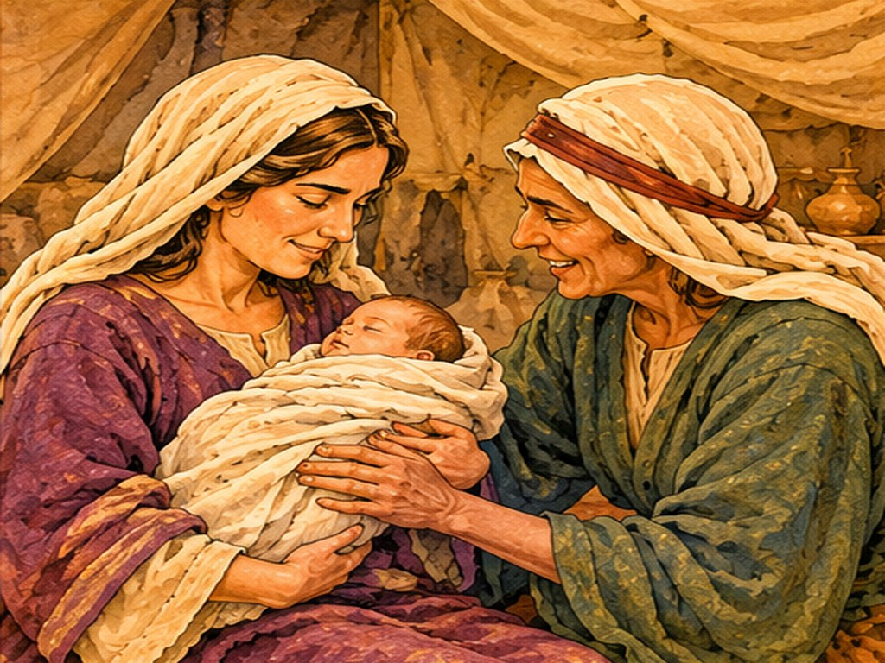
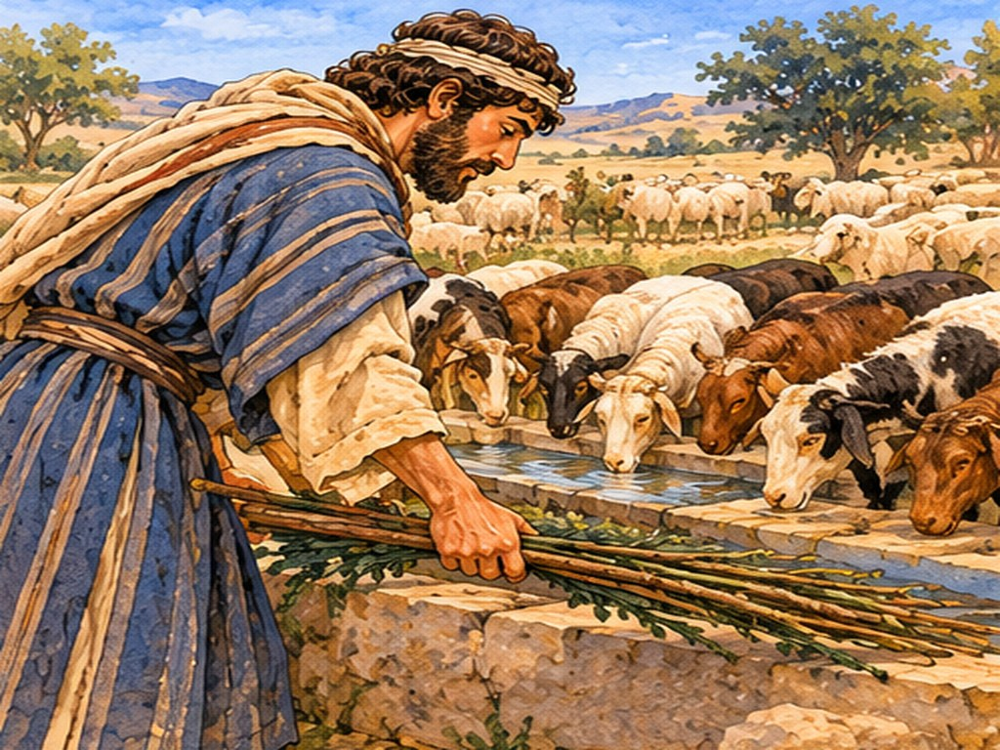

וַיֵּצֵ֥א יַעֲקֹ֖ב מִבְּאֵ֣ר שָׁ֑בַע וַיֵּ֖לֶךְ חָרָֽנָה׃
ויצא יעקב מבאר שבע וילך חרנה׃
Jacob sortit de Beer Shava et se dirigea vers Haran.
וַיִּפְגַּ֨ע בַּמָּק֜וֹם וַיָּ֤לֶן שָׁם֙ כִּי־בָ֣א הַשֶּׁ֔מֶשׁ וַיִּקַּח֙ מֵאַבְנֵ֣י הַמָּק֔וֹם וַיָּ֖שֶׂם מְרַֽאֲשֹׁתָ֑יו וַיִּשְׁכַּ֖ב בַּמָּק֥וֹם הַהֽוּא׃
ויפגע במקום וילן שם כי־בא השמש ויקח מאבני המקום וישם מראשתיו וישכב במקום ההוא׃
Il arriva dans un endroit où il établit son gîte, parce que le soleil était couché. Il prit une des pierres de l’endroit, en fit son chevet et passa la nuit dans ce lieu.
וַֽיַּחֲלֹ֗ם וְהִנֵּ֤ה סֻלָּם֙ מֻצָּ֣ב אַ֔רְצָה וְרֹאשׁ֖וֹ מַגִּ֣יעַ הַשָּׁמָ֑יְמָה וְהִנֵּה֙ מַלְאֲכֵ֣י אֱלֹהִ֔ים עֹלִ֥ים וְיֹרְדִ֖ים בּֽוֹ׃
ויחלם והנה סלם מצב ארצה וראשו מגיע השמימה והנה מלאכי אלהים עלים וירדים בו׃
Il eut un songe que voici: Une échelle était dressée sur la terre, son sommet atteignait le ciel et des messagers divins montaient et descendaient le long de cette échelle.
וְהִנֵּ֨ה יְהֹוָ֜ה נִצָּ֣ב עָלָיו֮ וַיֹּאמַר֒ אֲנִ֣י יְהֹוָ֗ה אֱלֹהֵי֙ אַבְרָהָ֣ם אָבִ֔יךָ וֵאלֹהֵ֖י יִצְחָ֑ק הָאָ֗רֶץ אֲשֶׁ֤ר אַתָּה֙ שֹׁכֵ֣ב עָלֶ֔יהָ לְךָ֥ אֶתְּנֶ֖נָּה וּלְזַרְעֶֽךָ׃
והנה יהוה נצב עליו ויאמר אני יהוה אלהי אברהם אביך ואלהי יצחק הארץ אשר אתה שכב עליה לך אתננה ולזרעך׃
Puis, l’Éternel apparaissait au sommet et disait: "Je suis l’Éternel, le Dieu d’Abraham ton père et d’Isaac; cette terre sur laquelle tu reposes, je te la donne à toi et à ta postérité.
וְהָיָ֤ה זַרְעֲךָ֙ כַּעֲפַ֣ר הָאָ֔רֶץ וּפָרַצְתָּ֛ יָ֥מָּה וָקֵ֖דְמָה וְצָפֹ֣נָה וָנֶ֑גְבָּה וְנִבְרְכ֥וּ בְךָ֛ כׇּל־מִשְׁפְּחֹ֥ת הָאֲדָמָ֖ה וּבְזַרְעֶֽךָ׃
והיה זרעך כעפר הארץ ופרצת ימה וקדמה וצפנה ונגבה ונברכו בך כל־משפחת האדמה ובזרעך׃
Elle sera, ta postérité, comme la poussière de la terre; et tu déborderas au couchant et au levant, au nord et au midi; et toutes les familles de la terre seront heureuses par toi et par ta postérité.
וְהִנֵּ֨ה אָנֹכִ֜י עִמָּ֗ךְ וּשְׁמַרְתִּ֙יךָ֙ בְּכֹ֣ל אֲשֶׁר־תֵּלֵ֔ךְ וַהֲשִׁ֣בֹתִ֔יךָ אֶל־הָאֲדָמָ֖ה הַזֹּ֑את כִּ֚י לֹ֣א אֶֽעֱזׇבְךָ֔ עַ֚ד אֲשֶׁ֣ר אִם־עָשִׂ֔יתִי אֵ֥ת אֲשֶׁר־דִּבַּ֖רְתִּי לָֽךְ׃
והנה אנכי עמך ושמרתיך בכל אשר־תלך והשבתיך אל־האדמה הזאת כי לא אעזבך עד אשר אם־עשיתי את אשר־דברתי לך׃
Oui, je suis avec toi; je veillerai sur chacun de tes pas et je te ramènerai dans cette contrée, car je ne veux point t’abandonner avant d’avoir accompli ce que je t’ai promis."
וַיִּיקַ֣ץ יַעֲקֹב֮ מִשְּׁנָתוֹ֒ וַיֹּ֕אמֶר אָכֵן֙ יֵ֣שׁ יְהֹוָ֔ה בַּמָּק֖וֹם הַזֶּ֑ה וְאָנֹכִ֖י לֹ֥א יָדָֽעְתִּי׃
וייקץ יעקב משנתו ויאמר אכן יש יהוה במקום הזה ואנכי לא ידעתי׃
Jacob, s’étant réveillé, s’écria: "Assurément, l’Éternel est présent en ce lieu et moi je l’ignorais."
וַיִּירָא֙ וַיֹּאמַ֔ר מַה־נּוֹרָ֖א הַמָּק֣וֹם הַזֶּ֑ה אֵ֣ין זֶ֗ה כִּ֚י אִם־בֵּ֣ית אֱלֹהִ֔ים וְזֶ֖ה שַׁ֥עַר הַשָּׁמָֽיִם׃
ויירא ויאמר מה־נורא המקום הזה אין זה כי אם־בית אלהים וזה שער השמים׃
Et, saisi de crainte, il ajouta: "Que ce lieu est redoutable! ceci n’est autre que la maison du Seigneur et c’est ici la porte du ciel."
וַיַּשְׁכֵּ֨ם יַעֲקֹ֜ב בַּבֹּ֗קֶר וַיִּקַּ֤ח אֶת־הָאֶ֙בֶן֙ אֲשֶׁר־שָׂ֣ם מְרַֽאֲשֹׁתָ֔יו וַיָּ֥שֶׂם אֹתָ֖הּ מַצֵּבָ֑ה וַיִּצֹ֥ק שֶׁ֖מֶן עַל־רֹאשָֽׁהּ׃
וישכם יעקב בבקר ויקח את־האבן אשר־שם מראשתיו וישם אתה מצבה ויצק שמן על־ראשה׃
Jacob se leva de grand matin; il prit la pierre qu’il avait mise sous sa tête, l’érigea en monument et répandit de l’huile à son faite.
וַיִּקְרָ֛א אֶת־שֵֽׁם־הַמָּק֥וֹם הַה֖וּא בֵּֽית־אֵ֑ל וְאוּלָ֛ם ל֥וּז שֵׁם־הָעִ֖יר לָרִאשֹׁנָֽה׃
ויקרא את־שם־המקום ההוא בית־אל ואולם לוז שם־העיר לראשנה׃
Il appela cet endroit Béthel; mais Louz était d’abord le nom de la ville.
וַיִּדַּ֥ר יַעֲקֹ֖ב נֶ֣דֶר לֵאמֹ֑ר אִם־יִהְיֶ֨ה אֱלֹהִ֜ים עִמָּדִ֗י וּשְׁמָרַ֙נִי֙ בַּדֶּ֤רֶךְ הַזֶּה֙ אֲשֶׁ֣ר אָנֹכִ֣י הוֹלֵ֔ךְ וְנָֽתַן־לִ֥י לֶ֛חֶם לֶאֱכֹ֖ל וּבֶ֥גֶד לִלְבֹּֽשׁ׃
וידר יעקב נדר לאמר אם־יהיה אלהים עמדי ושמרני בדרך הזה אשר אנכי הולך ונתן־לי לחם לאכל ובגד ללבש׃
Jacob prononça un vœu en ces termes: "Si le Seigneur est avec moi, s’il me protège dans la voie où je marche, s’il me donne du pain à manger et des vêtements pour me couvrir;
וְשַׁבְתִּ֥י בְשָׁל֖וֹם אֶל־בֵּ֣ית אָבִ֑י וְהָיָ֧ה יְהֹוָ֛ה לִ֖י לֵאלֹהִֽים׃
ושבתי בשלום אל־בית אבי והיה יהוה לי לאלהים׃
si je retourne en paix à la maison paternelle, alors le Seigneur aura été un Dieu pour moi
וְהָאֶ֣בֶן הַזֹּ֗את אֲשֶׁר־שַׂ֙מְתִּי֙ מַצֵּבָ֔ה יִהְיֶ֖ה בֵּ֣ית אֱלֹהִ֑ים וְכֹל֙ אֲשֶׁ֣ר תִּתֶּן־לִ֔י עַשֵּׂ֖ר אֲעַשְּׂרֶ֥נּוּ לָֽךְ׃
והאבן הזאת אשר־שמתי מצבה יהיה בית אלהים וכל אשר תתן־לי עשר אעשרנו לך׃
et cette pierre que je viens d’ériger en monument deviendra la maison du Seigneur et tous les biens que tu m’accorderas, je veux t’en offrir la dîme."
וַיִּשָּׂ֥א יַעֲקֹ֖ב רַגְלָ֑יו וַיֵּ֖לֶךְ אַ֥רְצָה בְנֵי־קֶֽדֶם׃
וישא יעקב רגליו וילך ארצה בני־קדם׃
Jacob se remit en chemin et alla vers la terre des enfants de l’Orient.
וַיַּ֞רְא וְהִנֵּ֧ה בְאֵ֣ר בַּשָּׂדֶ֗ה וְהִנֵּה־שָׁ֞ם שְׁלֹשָׁ֤ה עֶדְרֵי־צֹאן֙ רֹבְצִ֣ים עָלֶ֔יהָ כִּ֚י מִן־הַבְּאֵ֣ר הַהִ֔וא יַשְׁק֖וּ הָעֲדָרִ֑ים וְהָאֶ֥בֶן גְּדֹלָ֖ה עַל־פִּ֥י הַבְּאֵֽר׃
וירא והנה באר בשדה והנה־שם שלשה עדרי־צאן רבצים עליה כי מן־הבאר ההוא ישקו העדרים והאבן גדלה על־פי הבאר׃
Il vit un puits dans les champs et là, trois troupeaux de menu bétail étaient couchés à l’entour, car ce puits servait à abreuver les troupeaux. Or la pierre, sur la margelle du puits, était grosse.
וְנֶאֶסְפוּ־שָׁ֣מָּה כׇל־הָעֲדָרִ֗ים וְגָלְל֤וּ אֶת־הָאֶ֙בֶן֙ מֵעַל֙ פִּ֣י הַבְּאֵ֔ר וְהִשְׁק֖וּ אֶת־הַצֹּ֑אן וְהֵשִׁ֧יבוּ אֶת־הָאֶ֛בֶן עַל־פִּ֥י הַבְּאֵ֖ר לִמְקֹמָֽהּ׃
ונאספו־שמה כל־העדרים וגללו את־האבן מעל פי הבאר והשקו את־הצאן והשיבו את־האבן על־פי הבאר למקמה׃
Quand tous les troupeaux y étaient réunis, on faisait glisser la pierre de dessus la margelle du puits et l’on abreuvait le bétail, puis on replaçait la pierre sur la margelle du puits.
וַיֹּ֤אמֶר לָהֶם֙ יַעֲקֹ֔ב אַחַ֖י מֵאַ֣יִן אַתֶּ֑ם וַיֹּ֣אמְר֔וּ מֵחָרָ֖ן אֲנָֽחְנוּ׃
ויאמר להם יעקב אחי מאין אתם ויאמרו מחרן אנחנו׃
Jacob leur dit: "Mes frères, d’où êtes vous?" Ils répondirent: "Nous sommes de Haran."
וַיֹּ֣אמֶר לָהֶ֔ם הַיְדַעְתֶּ֖ם אֶת־לָבָ֣ן בֶּן־נָח֑וֹר וַיֹּאמְר֖וּ יָדָֽעְנוּ׃
ויאמר להם הידעתם את־לבן בן־נחור ויאמרו ידענו׃
Il leur dit: "Connaissez-vous Laban, fils de Nahor?" Ils répondirent: "Nous le connaissons."
וַיֹּ֥אמֶר לָהֶ֖ם הֲשָׁל֣וֹם ל֑וֹ וַיֹּאמְר֣וּ שָׁל֔וֹם וְהִנֵּה֙ רָחֵ֣ל בִּתּ֔וֹ בָּאָ֖ה עִם־הַצֹּֽאן׃
ויאמר להם השלום לו ויאמרו שלום והנה רחל בתו באה עם־הצאן׃
Il leur dit: "Est-il en paix?" Et ils répondirent: "En paix; et voici Rachel, sa fille, qui vient avec son troupeau."
וַיֹּ֗אמֶר הֵ֥ן עוֹד֙ הַיּ֣וֹם גָּד֔וֹל לֹא־עֵ֖ת הֵאָסֵ֣ף הַמִּקְנֶ֑ה הַשְׁק֥וּ הַצֹּ֖אן וּלְכ֥וּ רְעֽוּ׃
ויאמר הן עוד היום גדול לא־עת האסף המקנה השקו הצאן ולכו רעו׃
"Mais," reprit-il, "le jour est encore long, il n’est pas l’heure de faire rentrer le bétail: abreuvez les brebis et les menez paître."
וַיֹּאמְרוּ֮ לֹ֣א נוּכַל֒ עַ֣ד אֲשֶׁ֤ר יֵאָֽסְפוּ֙ כׇּל־הָ֣עֲדָרִ֔ים וְגָֽלְלוּ֙ אֶת־הָאֶ֔בֶן מֵעַ֖ל פִּ֣י הַבְּאֵ֑ר וְהִשְׁקִ֖ינוּ הַצֹּֽאן׃
ויאמרו לא נוכל עד אשר יאספו כל־העדרים וגללו את־האבן מעל פי הבאר והשקינו הצאן׃
Ils dirent: "Nous ne saurions, jusqu’à ce que tous les troupeaux soient rassemblés: on déplacera alors la pierre qui couvre l’orifice du puits et nous ferons boire les brebis."
עוֹדֶ֖נּוּ מְדַבֵּ֣ר עִמָּ֑ם וְרָחֵ֣ל ׀ בָּ֗אָה עִם־הַצֹּאן֙ אֲשֶׁ֣ר לְאָבִ֔יהָ כִּ֥י רֹעָ֖ה הִֽוא׃
עודנו מדבר עמם ורחל ׀ באה עם־הצאן אשר לאביה כי רעה הוא׃
Comme il s’entretenait avec eux, Rachel vint avec le troupeau de son père car elle était bergère.
וַיְהִ֡י כַּאֲשֶׁר֩ רָאָ֨ה יַעֲקֹ֜ב אֶת־רָחֵ֗ל בַּת־לָבָן֙ אֲחִ֣י אִמּ֔וֹ וְאֶת־צֹ֥אן לָבָ֖ן אֲחִ֣י אִמּ֑וֹ וַיִּגַּ֣שׁ יַעֲקֹ֗ב וַיָּ֤גֶל אֶת־הָאֶ֙בֶן֙ מֵעַל֙ פִּ֣י הַבְּאֵ֔ר וַיַּ֕שְׁקְ אֶת־צֹ֥אן לָבָ֖ן אֲחִ֥י אִמּֽוֹ׃
ויהי כאשר ראה יעקב את־רחל בת־לבן אחי אמו ואת־צאן לבן אחי אמו ויגש יעקב ויגל את־האבן מעל פי הבאר וישק את־צאן לבן אחי אמו׃
Lorsque Jacob vit Rachel, fille de Laban, frère de sa mère et les brebis de ce dernier, il s’avança, fit glisser la pierre de dessus la margelle du puits et fit boire les brebis de Laban, frère de sa mère.
וַיִּשַּׁ֥ק יַעֲקֹ֖ב לְרָחֵ֑ל וַיִּשָּׂ֥א אֶת־קֹל֖וֹ וַיֵּֽבְךְּ׃
וישק יעקב לרחל וישא את־קלו ויבך׃
Et Jacob embrassa Rachel et il éleva la voix en pleurant.
וַיַּגֵּ֨ד יַעֲקֹ֜ב לְרָחֵ֗ל כִּ֣י אֲחִ֤י אָבִ֙יהָ֙ ה֔וּא וְכִ֥י בֶן־רִבְקָ֖ה ה֑וּא וַתָּ֖רׇץ וַתַּגֵּ֥ד לְאָבִֽיהָ׃
ויגד יעקב לרחל כי אחי אביה הוא וכי בן־רבקה הוא ותרץ ותגד לאביה׃
Et Jacob apprit à Rachel qu’il était parent de son père, qu’il était le fils de Rébecca. Elle courut l’annoncer à son père.
וַיְהִי֩ כִשְׁמֹ֨עַ לָבָ֜ן אֶת־שֵׁ֣מַע ׀ יַעֲקֹ֣ב בֶּן־אֲחֹת֗וֹ וַיָּ֤רׇץ לִקְרָאתוֹ֙ וַיְחַבֶּק־לוֹ֙ וַיְנַשֶּׁק־ל֔וֹ וַיְבִיאֵ֖הוּ אֶל־בֵּית֑וֹ וַיְסַפֵּ֣ר לְלָבָ֔ן אֵ֥ת כׇּל־הַדְּבָרִ֖ים הָאֵֽלֶּה׃
ויהי כשמע לבן את־שמע ׀ יעקב בן־אחתו וירץ לקראתו ויחבק־לו וינשק־לו ויביאהו אל־ביתו ויספר ללבן את כל־הדברים האלה׃
Aussitôt que Laban eut appris l’arrivée de Jacob, le fils de sa sœur, il courut au devant de lui, il l’embrassa, le couvrit de baisers et l’emmena dans sa demeure. Jacob raconta à Laban tous ces événements.
וַיֹּ֤אמֶר לוֹ֙ לָבָ֔ן אַ֛ךְ עַצְמִ֥י וּבְשָׂרִ֖י אָ֑תָּה וַיֵּ֥שֶׁב עִמּ֖וֹ חֹ֥דֶשׁ יָמִֽים׃
ויאמר לו לבן אך עצמי ובשרי אתה וישב עמו חדש ימים׃
Laban lui dit: "Tu n’es rien moins que mon corps et ma chair!" Et il demeura avec lui un mois durant.
וַיֹּ֤אמֶר לָבָן֙ לְיַעֲקֹ֔ב הֲכִי־אָחִ֣י אַ֔תָּה וַעֲבַדְתַּ֖נִי חִנָּ֑ם הַגִּ֥ידָה לִּ֖י מַה־מַּשְׂכֻּרְתֶּֽךָ׃
ויאמר לבן ליעקב הכי־אחי אתה ועבדתני חנם הגידה לי מה־משכרתך׃
Alors Laban dit à Jacob: "Quoi! parce que tu es mon parent, tu me servirais gratuitement? Déclare moi quel doit être ton salaire."
וּלְלָבָ֖ן שְׁתֵּ֣י בָנ֑וֹת שֵׁ֤ם הַגְּדֹלָה֙ לֵאָ֔ה וְשֵׁ֥ם הַקְּטַנָּ֖ה רָחֵֽל׃
וללבן שתי בנות שם הגדלה לאה ושם הקטנה רחל׃
Or, Laban avait deux filles: le nom de l’aînée était Léa, celui de la cadette Rachel.
וְעֵינֵ֥י לֵאָ֖ה רַכּ֑וֹת וְרָחֵל֙ הָֽיְתָ֔ה יְפַת־תֹּ֖אַר וִיפַ֥ת מַרְאֶֽה׃
ועיני לאה רכות ורחל היתה יפת־תאר ויפת מראה׃
Léa avait les yeux faibles; Rachel était belle de taille et belle de visage.
וַיֶּאֱהַ֥ב יַעֲקֹ֖ב אֶת־רָחֵ֑ל וַיֹּ֗אמֶר אֶֽעֱבׇדְךָ֙ שֶׁ֣בַע שָׁנִ֔ים בְּרָחֵ֥ל בִּתְּךָ֖ הַקְּטַנָּֽה׃
ויאהב יעקב את־רחל ויאמר אעבדך שבע שנים ברחל בתך הקטנה׃
Jacob avait conçu de l’amour pour Rachel. Il dit: "Je te servirai sept ans pour Rachel, ta plus jeune fille."
וַיֹּ֣אמֶר לָבָ֗ן ט֚וֹב תִּתִּ֣י אֹתָ֣הּ לָ֔ךְ מִתִּתִּ֥י אֹתָ֖הּ לְאִ֣ישׁ אַחֵ֑ר שְׁבָ֖ה עִמָּדִֽי׃
ויאמר לבן טוב תתי אתה לך מתתי אתה לאיש אחר שבה עמדי׃
Laban répondit: "J’aime mieux te la donner que de la donner à un autre époux: demeure avec moi."
וַיַּעֲבֹ֧ד יַעֲקֹ֛ב בְּרָחֵ֖ל שֶׁ֣בַע שָׁנִ֑ים וַיִּהְי֤וּ בְעֵינָיו֙ כְּיָמִ֣ים אֲחָדִ֔ים בְּאַהֲבָת֖וֹ אֹתָֽהּ׃
ויעבד יעקב ברחל שבע שנים ויהיו בעיניו כימים אחדים באהבתו אתה׃
Jacob servit, pour obtenir Rachel, sept années et elles furent à ses yeux comme quelques jours, tant il l’aimait.
וַיֹּ֨אמֶר יַעֲקֹ֤ב אֶל־לָבָן֙ הָבָ֣ה אֶת־אִשְׁתִּ֔י כִּ֥י מָלְא֖וּ יָמָ֑י וְאָב֖וֹאָה אֵלֶֽיהָ׃
ויאמר יעקב אל־לבן הבה את־אשתי כי מלאו ימי ואבואה אליה׃
Jacob dit à Laban: "Donne-moi ma femme, car mon temps est accompli et je veux m’unir à elle."
וַיֶּאֱסֹ֥ף לָבָ֛ן אֶת־כׇּל־אַנְשֵׁ֥י הַמָּק֖וֹם וַיַּ֥עַשׂ מִשְׁתֶּֽה׃
ויאסף לבן את־כל־אנשי המקום ויעש משתה׃
Laban réunit tous les habitants du lieu et donna un festin.
וַיְהִ֣י בָעֶ֔רֶב וַיִּקַּח֙ אֶת־לֵאָ֣ה בִתּ֔וֹ וַיָּבֵ֥א אֹתָ֖הּ אֵלָ֑יו וַיָּבֹ֖א אֵלֶֽיהָ׃
ויהי בערב ויקח את־לאה בתו ויבא אתה אליו ויבא אליה׃
Mais, le soir venu, il prit Léa sa fille et la lui amena et Jacob s’unit à elle.
וַיִּתֵּ֤ן לָבָן֙ לָ֔הּ אֶת־זִלְפָּ֖ה שִׁפְחָת֑וֹ לְלֵאָ֥ה בִתּ֖וֹ שִׁפְחָֽה׃
ויתן לבן לה את־זלפה שפחתו ללאה בתו שפחה׃
Laban avait aussi donné Zilpa, son esclave, à Léa, sa fille, comme esclave.
וַיְהִ֣י בַבֹּ֔קֶר וְהִנֵּה־הִ֖וא לֵאָ֑ה וַיֹּ֣אמֶר אֶל־לָבָ֗ן מַה־זֹּאת֙ עָשִׂ֣יתָ לִּ֔י הֲלֹ֤א בְרָחֵל֙ עָבַ֣דְתִּי עִמָּ֔ךְ וְלָ֖מָּה רִמִּיתָֽנִי׃
ויהי בבקר והנה־הוא לאה ויאמר אל־לבן מה־זאת עשית לי הלא ברחל עבדתי עמך ולמה רמיתני׃
Or, le matin, il se trouva que c’était Léa; et il dit à Laban: "Que m’as-tu fait là! N’est ce pas pour Rachel que j’ai servi chez toi? Et pourquoi m’as-tu trompé?"
וַיֹּ֣אמֶר לָבָ֔ן לֹא־יֵעָשֶׂ֥ה כֵ֖ן בִּמְקוֹמֵ֑נוּ לָתֵ֥ת הַצְּעִירָ֖ה לִפְנֵ֥י הַבְּכִירָֽה׃
ויאמר לבן לא־יעשה כן במקומנו לתת הצעירה לפני הבכירה׃
Laban répondit: "Ce n’est pas l’usage, dans notre pays, de marier la cadette avant l’aînée.
מַלֵּ֖א שְׁבֻ֣עַ זֹ֑את וְנִתְּנָ֨ה לְךָ֜ גַּם־אֶת־זֹ֗את בַּעֲבֹדָה֙ אֲשֶׁ֣ר תַּעֲבֹ֣ד עִמָּדִ֔י ע֖וֹד שֶֽׁבַע־שָׁנִ֥ים אֲחֵרֽוֹת׃
מלא שבע זאת ונתנה לך גם־את־זאת בעבדה אשר תעבד עמדי עוד שבע־שנים אחרות׃
Achève la semaine de celle ci et nous te donnerons également celle là en échange du service que tu feras encore chez moi pendant sept autres années."
וַיַּ֤עַשׂ יַעֲקֹב֙ כֵּ֔ן וַיְמַלֵּ֖א שְׁבֻ֣עַ זֹ֑את וַיִּתֶּן־ל֛וֹ אֶת־רָחֵ֥ל בִּתּ֖וֹ ל֥וֹ לְאִשָּֽׁה׃
ויעש יעקב כן וימלא שבע זאת ויתן־לו את־רחל בתו לו לאשה׃
Ainsi fit Jacob, il acheva la semaine de la première; puis Laban lui accorda Rachel, sa fille, pour épouse.
וַיִּתֵּ֤ן לָבָן֙ לְרָחֵ֣ל בִּתּ֔וֹ אֶת־בִּלְהָ֖ה שִׁפְחָת֑וֹ לָ֖הּ לְשִׁפְחָֽה׃
ויתן לבן לרחל בתו את־בלהה שפחתו לה לשפחה׃
Laban donna, à Rachel sa fille, Bilha, son esclave, pour qu’elle devint la sienne.
וַיָּבֹא֙ גַּ֣ם אֶל־רָחֵ֔ל וַיֶּאֱהַ֥ב גַּֽם־אֶת־רָחֵ֖ל מִלֵּאָ֑ה וַיַּעֲבֹ֣ד עִמּ֔וֹ ע֖וֹד שֶֽׁבַע־שָׁנִ֥ים אֲחֵרֽוֹת׃
ויבא גם אל־רחל ויאהב גם־את־רחל מלאה ויעבד עמו עוד שבע־שנים אחרות׃
Jacob s’unit pareillement à Rachel et persista à aimer Rachel plus que Léa; et il servit encore chez Laban sept autres années.
וַיַּ֤רְא יְהֹוָה֙ כִּֽי־שְׂנוּאָ֣ה לֵאָ֔ה וַיִּפְתַּ֖ח אֶת־רַחְמָ֑הּ וְרָחֵ֖ל עֲקָרָֽה׃
וירא יהוה כי־שנואה לאה ויפתח את־רחמה ורחל עקרה׃
Le Seigneur considéra que Léa était dédaignée et il rendit son sein fécond, tandis que Rachel fut stérile.
וַתַּ֤הַר לֵאָה֙ וַתֵּ֣לֶד בֵּ֔ן וַתִּקְרָ֥א שְׁמ֖וֹ רְאוּבֵ֑ן כִּ֣י אָֽמְרָ֗ה כִּֽי־רָאָ֤ה יְהֹוָה֙ בְּעׇנְיִ֔י כִּ֥י עַתָּ֖ה יֶאֱהָבַ֥נִי אִישִֽׁי׃
ותהר לאה ותלד בן ותקרא שמו ראובן כי אמרה כי־ראה יהוה בעניי כי עתה יאהבני אישי׃
Léa conçut et enfanta un fils. Elle le nomma Ruben "parce que, dit elle, le Seigneur a vu mon humiliation, de sorte qu’à présent mon époux m’aimera."
וַתַּ֣הַר עוֹד֮ וַתֵּ֣לֶד בֵּן֒ וַתֹּ֗אמֶר כִּֽי־שָׁמַ֤ע יְהֹוָה֙ כִּֽי־שְׂנוּאָ֣ה אָנֹ֔כִי וַיִּתֶּן־לִ֖י גַּם־אֶת־זֶ֑ה וַתִּקְרָ֥א שְׁמ֖וֹ שִׁמְעֽוֹן׃
ותהר עוד ותלד בן ותאמר כי־שמע יהוה כי־שנואה אנכי ויתן־לי גם־את־זה ותקרא שמו שמעון׃
Elle conçut de nouveau et enfanta un fils. Elle dit: "Parce que le Seigneur a entendu que j’étais dédaignée, il m’a accordé aussi celui là." Et elle l’appela Siméon.
וַתַּ֣הַר עוֹד֮ וַתֵּ֣לֶד בֵּן֒ וַתֹּ֗אמֶר עַתָּ֤ה הַפַּ֙עַם֙ יִלָּוֶ֤ה אִישִׁי֙ אֵלַ֔י כִּֽי־יָלַ֥דְתִּי ל֖וֹ שְׁלֹשָׁ֣ה בָנִ֑ים עַל־כֵּ֥ן קָרָֽא־שְׁמ֖וֹ לֵוִֽי׃
ותהר עוד ותלד בן ותאמר עתה הפעם ילוה אישי אלי כי־ילדתי לו שלשה בנים על־כן קרא־שמו לוי׃
Elle conçut de nouveau et enfanta un fils. Elle dit: "Ah! désormais mon époux me sera attaché, puisque je lui ai donné trois fils." C’est pourquoi on l’appela Lévi.
וַתַּ֨הַר ע֜וֹד וַתֵּ֣לֶד בֵּ֗ן וַתֹּ֙אמֶר֙ הַפַּ֙עַם֙ אוֹדֶ֣ה אֶת־יְהֹוָ֔ה עַל־כֵּ֛ן קָרְאָ֥ה שְׁמ֖וֹ יְהוּדָ֑ה וַֽתַּעֲמֹ֖ד מִלֶּֽדֶת׃
ותהר עוד ותלד בן ותאמר הפעם אודה את־יהוה על־כן קראה שמו יהודה ותעמד מלדת׃
Elle conçut encore et mit au monde un fils et elle dit: "Pour le coup, je rends grâce à l’Éternel!" C’est pourquoi elle le nomma Juda. Alors elle cessa d’enfanter.
וַתֵּ֣רֶא רָחֵ֗ל כִּ֣י לֹ֤א יָֽלְדָה֙ לְיַעֲקֹ֔ב וַתְּקַנֵּ֥א רָחֵ֖ל בַּאֲחֹתָ֑הּ וַתֹּ֤אמֶר אֶֽל־יַעֲקֹב֙ הָֽבָה־לִּ֣י בָנִ֔ים וְאִם־אַ֖יִן מֵתָ֥ה אָנֹֽכִי׃
ותרא רחל כי לא ילדה ליעקב ותקנא רחל באחתה ותאמר אל־יעקב הבה־לי בנים ואם־אין מתה אנכי׃
Rachel, voyant qu’elle ne donnait pas d’enfants à Jacob, conçut de l’envie contre sa sœur et elle dit à Jacob." Rends moi mère, autrement j’en mourrai!"
וַיִּֽחַר־אַ֥ף יַעֲקֹ֖ב בְּרָחֵ֑ל וַיֹּ֗אמֶר הֲתַ֤חַת אֱלֹהִים֙ אָנֹ֔כִי אֲשֶׁר־מָנַ֥ע מִמֵּ֖ךְ פְּרִי־בָֽטֶן׃
ויחר־אף יעקב ברחל ויאמר התחת אלהים אנכי אשר־מנע ממך פרי־בטן׃
Jacob se fâcha contre Rachel et dit: "Suis je à la place de Dieu, qui t’a refusé la fécondité?"
וַתֹּ֕אמֶר הִנֵּ֛ה אֲמָתִ֥י בִלְהָ֖ה בֹּ֣א אֵלֶ֑יהָ וְתֵלֵד֙ עַל־בִּרְכַּ֔י וְאִבָּנֶ֥ה גַם־אָנֹכִ֖י מִמֶּֽנָּה׃
ותאמר הנה אמתי בלהה בא אליה ותלד על־ברכי ואבנה גם־אנכי ממנה׃
Elle dit alors: "Voici ma servante Bilha, approche toi d’elle; elle enfantera dans mes bras, et, par elle, moi aussi je serai mère."
וַתִּתֶּן־ל֛וֹ אֶת־בִּלְהָ֥ה שִׁפְחָתָ֖הּ לְאִשָּׁ֑ה וַיָּבֹ֥א אֵלֶ֖יהָ יַעֲקֹֽב׃
ותתן־לו את־בלהה שפחתה לאשה ויבא אליה יעקב׃
Elle lui donna Bilha, son esclave, comme épouse et Jacob s’approcha d’elle.
וַתַּ֣הַר בִּלְהָ֔ה וַתֵּ֥לֶד לְיַעֲקֹ֖ב בֵּֽן׃
ותהר בלהה ותלד ליעקב בן׃
Bilha conçut et enfanta un fils à Jacob.
וַתֹּ֤אמֶר רָחֵל֙ דָּנַ֣נִּי אֱלֹהִ֔ים וְגַם֙ שָׁמַ֣ע בְּקֹלִ֔י וַיִּתֶּן־לִ֖י בֵּ֑ן עַל־כֵּ֛ן קָרְאָ֥ה שְׁמ֖וֹ דָּֽן׃
ותאמר רחל דנני אלהים וגם שמע בקלי ויתן־לי בן על־כן קראה שמו דן׃
Rachel dit alors: "Le Seigneur m’a jugée et il a écouté ma voix aussi en me donnant un fils." C’est pourquoi elle le nomma Dan.
וַתַּ֣הַר ע֔וֹד וַתֵּ֕לֶד בִּלְהָ֖ה שִׁפְחַ֣ת רָחֵ֑ל בֵּ֥ן שֵׁנִ֖י לְיַעֲקֹֽב׃
ותהר עוד ותלד בלהה שפחת רחל בן שני ליעקב׃
Bilha, l’esclave de Rachel, conçut de nouveau et enfanta un second fils à Jacob.
וַתֹּ֣אמֶר רָחֵ֗ל נַפְתּוּלֵ֨י אֱלֹהִ֧ים ׀ נִפְתַּ֛לְתִּי עִם־אֲחֹתִ֖י גַּם־יָכֹ֑לְתִּי וַתִּקְרָ֥א שְׁמ֖וֹ נַפְתָּלִֽי׃
ותאמר רחל נפתולי אלהים ׀ נפתלתי עם־אחתי גם־יכלתי ותקרא שמו נפתלי׃
Et Rachel dit: "C’est une lutte de Dieu que j’ai entreprise contre ma sœur et pourtant je triomphe!" Et elle le nomma Nephtali.
וַתֵּ֣רֶא לֵאָ֔ה כִּ֥י עָמְדָ֖ה מִלֶּ֑דֶת וַתִּקַּח֙ אֶת־זִלְפָּ֣ה שִׁפְחָתָ֔הּ וַתִּתֵּ֥ן אֹתָ֛הּ לְיַעֲקֹ֖ב לְאִשָּֽׁה׃
ותרא לאה כי עמדה מלדת ותקח את־זלפה שפחתה ותתן אתה ליעקב לאשה׃
Léa, voyant qu’elle avait discontinué d’enfanter, prit Zilpa, son esclave et la donna à Jacob comme épouse.
וַתֵּ֗לֶד זִלְפָּ֛ה שִׁפְחַ֥ת לֵאָ֖ה לְיַעֲקֹ֥ב בֵּֽן׃
ותלד זלפה שפחת לאה ליעקב בן׃
Zilpa, esclave de Léa, donna à Jacob un fils.
וַתֹּ֥אמֶר לֵאָ֖ה (בגד) [בָּ֣א גָ֑ד] וַתִּקְרָ֥א אֶת־שְׁמ֖וֹ גָּֽד׃
ותאמר לאה (בגד) [בא גד] ותקרא את־שמו גד׃
Et Léa dit: "Une bande m’arrive!"
וַתֵּ֗לֶד זִלְפָּה֙ שִׁפְחַ֣ת לֵאָ֔ה בֵּ֥ן שֵׁנִ֖י לְיַעֲקֹֽב׃
ותלד זלפה שפחת לאה בן שני ליעקב׃
Zilpa, esclave de Léa, donna un second fils à Jacob.
וַתֹּ֣אמֶר לֵאָ֔ה בְּאׇשְׁרִ֕י כִּ֥י אִשְּׁר֖וּנִי בָּנ֑וֹת וַתִּקְרָ֥א אֶת־שְׁמ֖וֹ אָשֵֽׁר׃
ותאמר לאה באשרי כי אשרוני בנות ותקרא את־שמו אשר׃
Et Léa dit: "Il est né pour mon bonheur! Oui, les filles m’ont nommée bienheureuse." Et elle l’appela Aser.
וַיֵּ֨לֶךְ רְאוּבֵ֜ן בִּימֵ֣י קְצִיר־חִטִּ֗ים וַיִּמְצָ֤א דֽוּדָאִים֙ בַּשָּׂדֶ֔ה וַיָּבֵ֣א אֹתָ֔ם אֶל־לֵאָ֖ה אִמּ֑וֹ וַתֹּ֤אמֶר רָחֵל֙ אֶל־לֵאָ֔ה תְּנִי־נָ֣א לִ֔י מִדּוּדָאֵ֖י בְּנֵֽךְ׃
וילך ראובן בימי קציר־חטים וימצא דודאים בשדה ויבא אתם אל־לאה אמו ותאמר רחל אל־לאה תני־נא לי מדודאי בנך׃
Or, Ruben étant allé aux champs à l’époque de la récolte du froment, y trouva des mandragores et les apporta à Léa sa mère. Rachel dit à Léa; "Donne-moi, je te prie, des mandragores de ton fils."
וַתֹּ֣אמֶר לָ֗הּ הַמְעַט֙ קַחְתֵּ֣ךְ אֶת־אִישִׁ֔י וְלָקַ֕חַת גַּ֥ם אֶת־דּוּדָאֵ֖י בְּנִ֑י וַתֹּ֣אמֶר רָחֵ֗ל לָכֵן֙ יִשְׁכַּ֤ב עִמָּךְ֙ הַלַּ֔יְלָה תַּ֖חַת דּוּדָאֵ֥י בְנֵֽךְ׃
ותאמר לה המעט קחתך את־אישי ולקחת גם את־דודאי בני ותאמר רחל לכן ישכב עמך הלילה תחת דודאי בנך׃
Elle lui répondit: "N’est ce pas assez que tu te sois emparée de mon époux, sans prendre encore les mandragores de mon fils?" Rachel reprit: "Eh bien! Il reposera cette nuit avec toi en échange des mandragores de ton fils."
וַיָּבֹ֨א יַעֲקֹ֣ב מִן־הַשָּׂדֶה֮ בָּעֶ֒רֶב֒ וַתֵּצֵ֨א לֵאָ֜ה לִקְרָאת֗וֹ וַתֹּ֙אמֶר֙ אֵלַ֣י תָּב֔וֹא כִּ֚י שָׂכֹ֣ר שְׂכַרְתִּ֔יךָ בְּדוּדָאֵ֖י בְּנִ֑י וַיִּשְׁכַּ֥ב עִמָּ֖הּ בַּלַּ֥יְלָה הֽוּא׃
ויבא יעקב מן־השדה בערב ותצא לאה לקראתו ותאמר אלי תבוא כי שכר שכרתיך בדודאי בני וישכב עמה בלילה הוא׃
Jacob revenant des champs, le soir, Léa sortit à sa rencontre et dit: "C’est à mes côtés que tu viendras, car je t’ai retenu pour les mandragores de mon fils." Et il reposa près d’elle cette nuit là.
וַיִּשְׁמַ֥ע אֱלֹהִ֖ים אֶל־לֵאָ֑ה וַתַּ֛הַר וַתֵּ֥לֶד לְיַעֲקֹ֖ב בֵּ֥ן חֲמִישִֽׁי׃
וישמע אלהים אל־לאה ותהר ותלד ליעקב בן חמישי׃
Le Seigneur exauça Léa: elle conçut et enfanta à Jacob un cinquième fils.
וַתֹּ֣אמֶר לֵאָ֗ה נָתַ֤ן אֱלֹהִים֙ שְׂכָרִ֔י אֲשֶׁר־נָתַ֥תִּי שִׁפְחָתִ֖י לְאִישִׁ֑י וַתִּקְרָ֥א שְׁמ֖וֹ יִשָּׂשכָֽר׃
ותאמר לאה נתן אלהים שכרי אשר־נתתי שפחתי לאישי ותקרא שמו יששכר׃
Et Léa dit "Le Seigneur m’a récompensée d’avoir donné mon esclave à mon époux." Et elle lui donna le nom d’Issachar.
וַתַּ֤הַר עוֹד֙ לֵאָ֔ה וַתֵּ֥לֶד בֵּן־שִׁשִּׁ֖י לְיַעֲקֹֽב׃
ותהר עוד לאה ותלד בן־ששי ליעקב׃
Léa conçut de nouveau et donna un sixième fils à Jacob.
וַתֹּ֣אמֶר לֵאָ֗ה זְבָדַ֨נִי אֱלֹהִ֥ים ׀ אֹתִי֮ זֵ֣בֶד טוֹב֒ הַפַּ֙עַם֙ יִזְבְּלֵ֣נִי אִישִׁ֔י כִּֽי־יָלַ֥דְתִּי ל֖וֹ שִׁשָּׁ֣ה בָנִ֑ים וַתִּקְרָ֥א אֶת־שְׁמ֖וֹ זְבֻלֽוּן׃
ותאמר לאה זבדני אלהים ׀ אתי זבד טוב הפעם יזבלני אישי כי־ילדתי לו ששה בנים ותקרא את־שמו זבלון׃
Et Léa dit: "Le Seigneur m’a accordée, moi, comme un don précieux; désormais mon époux fera de moi sa compagne, car je lui ai enfanté six fils." Et elle appela celui ci Zabulon.
וְאַחַ֖ר יָ֣לְדָה בַּ֑ת וַתִּקְרָ֥א אֶת־שְׁמָ֖הּ דִּינָֽה׃
ואחר ילדה בת ותקרא את־שמה דינה׃
Plus tard elle enfanta une fille et elle la nomma Dina.
וַיִּזְכֹּ֥ר אֱלֹהִ֖ים אֶת־רָחֵ֑ל וַיִּשְׁמַ֤ע אֵלֶ֙יהָ֙ אֱלֹהִ֔ים וַיִּפְתַּ֖ח אֶת־רַחְמָֽהּ׃
ויזכר אלהים את־רחל וישמע אליה אלהים ויפתח את־רחמה׃
Le Seigneur se souvint de Rachel: il l’exauça et donna la fécondité à son sein.
וַתַּ֖הַר וַתֵּ֣לֶד בֵּ֑ן וַתֹּ֕אמֶר אָסַ֥ף אֱלֹהִ֖ים אֶת־חֶרְפָּתִֽי׃
ותהר ותלד בן ותאמר אסף אלהים את־חרפתי׃
Elle conçut et enfanta un fils; et elle dit: "Dieu a effacé ma honte."
וַתִּקְרָ֧א אֶת־שְׁמ֛וֹ יוֹסֵ֖ף לֵאמֹ֑ר יֹסֵ֧ף יְהֹוָ֛ה לִ֖י בֵּ֥ן אַחֵֽר׃
ותקרא את־שמו יוסף לאמר יסף יהוה לי בן אחר׃
Elle énonça son nom Joseph, en disant "Dieu veuille me donner encore un second fils!"
וַיְהִ֕י כַּאֲשֶׁ֛ר יָלְדָ֥ה רָחֵ֖ל אֶת־יוֹסֵ֑ף וַיֹּ֤אמֶר יַעֲקֹב֙ אֶל־לָבָ֔ן שַׁלְּחֵ֙נִי֙ וְאֵ֣לְכָ֔ה אֶל־מְקוֹמִ֖י וּלְאַרְצִֽי׃
ויהי כאשר ילדה רחל את־יוסף ויאמר יעקב אל־לבן שלחני ואלכה אל־מקומי ולארצי׃
Or, après que Rachel eut donné le jour à Joseph, Jacob dit à Laban: "Laisse moi partir, que je retourne chez moi, dans mon pays.
תְּנָ֞ה אֶת־נָשַׁ֣י וְאֶת־יְלָדַ֗י אֲשֶׁ֨ר עָבַ֧דְתִּי אֹֽתְךָ֛ בָּהֵ֖ן וְאֵלֵ֑כָה כִּ֚י אַתָּ֣ה יָדַ֔עְתָּ אֶת־עֲבֹדָתִ֖י אֲשֶׁ֥ר עֲבַדְתִּֽיךָ׃
תנה את־נשי ואת־ילדי אשר עבדתי אתך בהן ואלכה כי אתה ידעת את־עבדתי אשר עבדתיך׃
Donne moi mes femmes et mes enfants, ces femmes pour lesquelles je t’ai servi et que je m’en aille: car tu sais toi même avec quel zèle je t’ai servi."
וַיֹּ֤אמֶר אֵלָיו֙ לָבָ֔ן אִם־נָ֛א מָצָ֥אתִי חֵ֖ן בְּעֵינֶ֑יךָ נִחַ֕שְׁתִּי וַיְבָרְכֵ֥נִי יְהֹוָ֖ה בִּגְלָלֶֽךָ׃
ויאמר אליו לבן אם־נא מצאתי חן בעיניך נחשתי ויברכני יהוה בגללך׃
Laban lui répondit: "Ah! Si je trouvais grâce à tes yeux! J’avais bien auguré; l’Éternel m’a béni à cause de toi."
וַיֹּאמַ֑ר נׇקְבָ֧ה שְׂכָרְךָ֛ עָלַ֖י וְאֶתֵּֽנָה׃
ויאמר נקבה שכרך עלי ואתנה׃
Il continua: "Dicte moi ton salaire, je le donnerai."
וַיֹּ֣אמֶר אֵלָ֔יו אַתָּ֣ה יָדַ֔עְתָּ אֵ֖ת אֲשֶׁ֣ר עֲבַדְתִּ֑יךָ וְאֵ֛ת אֲשֶׁר־הָיָ֥ה מִקְנְךָ֖ אִתִּֽי׃
ויאמר אליו אתה ידעת את אשר עבדתיך ואת אשר־היה מקנך אתי׃
Il lui répondit: "Tu sais comment je t’ai servi et ce qu’est devenu ton bétail entre mes mains.
כִּ֡י מְעַט֩ אֲשֶׁר־הָיָ֨ה לְךָ֤ לְפָנַי֙ וַיִּפְרֹ֣ץ לָרֹ֔ב וַיְבָ֧רֶךְ יְהֹוָ֛ה אֹתְךָ֖ לְרַגְלִ֑י וְעַתָּ֗ה מָתַ֛י אֶֽעֱשֶׂ֥ה גַם־אָנֹכִ֖י לְבֵיתִֽי׃
כי מעט אשר־היה לך לפני ויפרץ לרב ויברך יהוה אתך לרגלי ועתה מתי אעשה גם־אנכי לביתי׃
Oui, de faible qu’il était avant moi, il s’est accru considérablement et l’Éternel t’a béni grâce à moi. Et maintenant, quand travaillerai-je à mon tour pour ma famille?"
וַיֹּ֖אמֶר מָ֣ה אֶתֶּן־לָ֑ךְ וַיֹּ֤אמֶר יַעֲקֹב֙ לֹא־תִתֶּן־לִ֣י מְא֔וּמָה אִם־תַּֽעֲשֶׂה־לִּי֙ הַדָּבָ֣ר הַזֶּ֔ה אָשׁ֛וּבָה אֶרְעֶ֥ה צֹֽאנְךָ֖ אֶשְׁמֹֽר׃
ויאמר מה אתן־לך ויאמר יעקב לא־תתן־לי מאומה אם־תעשה־לי הדבר הזה אשובה ארעה צאנך אשמר׃
Il répondit: "Que te donnerai-je?" Jacob répliqua: "Tu ne me donneras rien; mais si tu m’accordes la chose que voici, je recommencerai à conduire ton menu bétail, à le surveiller.
אֶֽעֱבֹ֨ר בְּכׇל־צֹֽאנְךָ֜ הַיּ֗וֹם הָסֵ֨ר מִשָּׁ֜ם כׇּל־שֶׂ֣ה ׀ נָקֹ֣ד וְטָל֗וּא וְכׇל־שֶׂה־חוּם֙ בַּכְּשָׂבִ֔ים וְטָל֥וּא וְנָקֹ֖ד בָּעִזִּ֑ים וְהָיָ֖ה שְׂכָרִֽי׃
אעבר בכל־צאנך היום הסר משם כל־שה ׀ נקד וטלוא וכל־שה־חום בכשבים וטלוא ונקד בעזים והיה שכרי׃
Je passerai en revue tout ton bétail aujourd’hui pour en écarter tous les agneaux pointillés et mouchetés et tous les agneaux bruns, parmi les brebis et les chevreaux mouchetés et pointillés, parmi les chèvres: ce sera mon salaire.
וְעָֽנְתָה־בִּ֤י צִדְקָתִי֙ בְּי֣וֹם מָחָ֔ר כִּֽי־תָב֥וֹא עַל־שְׂכָרִ֖י לְפָנֶ֑יךָ כֹּ֣ל אֲשֶׁר־אֵינֶ֩נּוּ֩ נָקֹ֨ד וְטָל֜וּא בָּֽעִזִּ֗ים וְחוּם֙ בַּכְּשָׂבִ֔ים גָּנ֥וּב ה֖וּא אִתִּֽי׃
וענתה־בי צדקתי ביום מחר כי־תבוא על־שכרי לפניך כל אשר־איננו נקד וטלוא בעזים וחום בכשבים גנוב הוא אתי׃
Mon droit parlera pour moi au jour à venir, où tu viendras vérifier mon salaire par tes yeux tout ce qui ne sera pas pointillé ou moucheté parmi les chèvres, brun parmi les brebis, je l’aurai volé."
וַיֹּ֥אמֶר לָבָ֖ן הֵ֑ן ל֖וּ יְהִ֥י כִדְבָרֶֽךָ׃
ויאמר לבן הן לו יהי כדברך׃
Laban répondit: "Bien; qu’il en soit comme tu as dit."
וַיָּ֣סַר בַּיּוֹם֩ הַה֨וּא אֶת־הַתְּיָשִׁ֜ים הָֽעֲקֻדִּ֣ים וְהַטְּלֻאִ֗ים וְאֵ֤ת כׇּל־הָֽעִזִּים֙ הַנְּקֻדּ֣וֹת וְהַטְּלֻאֹ֔ת כֹּ֤ל אֲשֶׁר־לָבָן֙ בּ֔וֹ וְכׇל־ח֖וּם בַּכְּשָׂבִ֑ים וַיִּתֵּ֖ן בְּיַד־בָּנָֽיו׃
ויסר ביום ההוא את־התישים העקדים והטלאים ואת כל־העזים הנקדות והטלאת כל אשר־לבן בו וכל־חום בכשבים ויתן ביד־בניו׃
Il mit à part, ce jour même, les boucs rayés ou mouchetés, toutes les chèvres pointillées ou mouchetées, tout ce qui était mêlé de blanc et toutes les brebis brunes et il les remit entre les mains de ses fils.
וַיָּ֗שֶׂם דֶּ֚רֶךְ שְׁלֹ֣שֶׁת יָמִ֔ים בֵּינ֖וֹ וּבֵ֣ין יַעֲקֹ֑ב וְיַעֲקֹ֗ב רֹעֶ֛ה אֶת־צֹ֥אן לָבָ֖ן הַנּוֹתָרֹֽת׃
וישם דרך שלשת ימים בינו ובין יעקב ויעקב רעה את־צאן לבן הנותרת׃
Il mit une distance de trois journées entre lui et Jacob; et Jacob conduisit paître le reste du troupeau de Laban.
וַיִּֽקַּֽח־ל֣וֹ יַעֲקֹ֗ב מַקַּ֥ל לִבְנֶ֛ה לַ֖ח וְל֣וּז וְעַרְמ֑וֹן וַיְפַצֵּ֤ל בָּהֵן֙ פְּצָל֣וֹת לְבָנ֔וֹת מַחְשֹׂף֙ הַלָּבָ֔ן אֲשֶׁ֖ר עַל־הַמַּקְלֽוֹת׃
ויקח־לו יעקב מקל לבנה לח ולוז וערמון ויפצל בהן פצלות לבנות מחשף הלבן אשר על־המקלות׃
Or, Jacob se pourvut de rameaux verts de peuplier, d’amandier et de platane; il y pratiqua des entailles blanches en mettant à découvert la blancheur des rameaux.
וַיַּצֵּ֗ג אֶת־הַמַּקְלוֹת֙ אֲשֶׁ֣ר פִּצֵּ֔ל בָּרְהָטִ֖ים בְּשִֽׁקְת֣וֹת הַמָּ֑יִם אֲשֶׁר֩ תָּבֹ֨אןָ הַצֹּ֤אן לִשְׁתּוֹת֙ לְנֹ֣כַח הַצֹּ֔אן וַיֵּחַ֖מְנָה בְּבֹאָ֥ן לִשְׁתּֽוֹת׃
ויצג את־המקלות אשר פצל ברהטים בשקתות המים אשר תבאן הצאן לשתות לנכח הצאן ויחמנה בבאן לשתות׃
Il fixa les rameaux, ainsi écorcés, dans les rigoles, dans les auges où le menu bétail venait boire en face du menu bétail et entrait en chaleur en venant ainsi boire.
וַיֶּחֱמ֥וּ הַצֹּ֖אן אֶל־הַמַּקְל֑וֹת וַתֵּלַ֣דְןָ הַצֹּ֔אן עֲקֻדִּ֥ים נְקֻדִּ֖ים וּטְלֻאִֽים׃
ויחמו הצאן אל־המקלות ותלדן הצאן עקדים נקדים וטלאים׃
Les brebis s’échauffèrent devant les rameaux et produisirent des agneaux rayés, pointillés, mouchetés.
וְהַכְּשָׂבִים֮ הִפְרִ֣יד יַעֲקֹב֒ וַ֠יִּתֵּ֠ן פְּנֵ֨י הַצֹּ֧אן אֶל־עָקֹ֛ד וְכׇל־ח֖וּם בְּצֹ֣אן לָבָ֑ן וַיָּֽשֶׁת־ל֤וֹ עֲדָרִים֙ לְבַדּ֔וֹ וְלֹ֥א שָׁתָ֖ם עַל־צֹ֥אן לָבָֽן׃
והכשבים הפריד יעקב ויתן פני הצאן אל־עקד וכל־חום בצאן לבן וישת־לו עדרים לבדו ולא שתם על־צאן לבן׃
Ces agneaux, Jacob les tenait à distance et il tournait la face du bétail de Laban, du coté des tachetés et des bruns; plus tard il les réunit en troupeau pour lui seul et ne les mêla point au bétail de Laban.
וְהָיָ֗ה בְּכׇל־יַחֵם֮ הַצֹּ֣אן הַמְקֻשָּׁרוֹת֒ וְשָׂ֨ם יַעֲקֹ֧ב אֶת־הַמַּקְל֛וֹת לְעֵינֵ֥י הַצֹּ֖אן בָּרְהָטִ֑ים לְיַחְמֵ֖נָּה בַּמַּקְלֽוֹת׃
והיה בכל־יחם הצאן המקשרות ושם יעקב את־המקלות לעיני הצאן ברהטים ליחמנה במקלות׃
Or, chaque fois que les brebis se livraient avec ardeur à l’accouplement, Jacob exposait les rameaux à leurs regards, dans les rigoles, pour qu’elles conçussent devant ces rameaux,
וּבְהַעֲטִ֥יף הַצֹּ֖אן לֹ֣א יָשִׂ֑ים וְהָיָ֤ה הָעֲטֻפִים֙ לְלָבָ֔ן וְהַקְּשֻׁרִ֖ים לְיַעֲקֹֽב׃
ובהעטיף הצאן לא ישים והיה העטפים ללבן והקשרים ליעקב׃
mais quand elles s’y livraient languissamment, il ne le faisait point: de sorte que les agneaux débiles furent pour Laban, les vigoureux pour Jacob.
וַיִּפְרֹ֥ץ הָאִ֖ישׁ מְאֹ֣ד מְאֹ֑ד וַֽיְהִי־לוֹ֙ צֹ֣אן רַבּ֔וֹת וּשְׁפָחוֹת֙ וַעֲבָדִ֔ים וּגְמַלִּ֖ים וַחֲמֹרִֽים׃
ויפרץ האיש מאד מאד ויהי־לו צאן רבות ושפחות ועבדים וגמלים וחמרים׃
Cet homme s’enrichit prodigieusement; il acquit du menu bétail en quantité, des esclaves mâles et femelles, des chameaux et des ânes.
וַיִּשְׁמַ֗ע אֶת־דִּבְרֵ֤י בְנֵֽי־לָבָן֙ לֵאמֹ֔ר לָקַ֣ח יַעֲקֹ֔ב אֵ֖ת כׇּל־אֲשֶׁ֣ר לְאָבִ֑ינוּ וּמֵאֲשֶׁ֣ר לְאָבִ֔ינוּ עָשָׂ֕ה אֵ֥ת כׇּל־הַכָּבֹ֖ד הַזֶּֽה׃
וישמע את־דברי בני־לבן לאמר לקח יעקב את כל־אשר לאבינו ומאשר לאבינו עשה את כל־הכבד הזה׃
Or, il fut instruit des propos des fils de Laban, qui disaient: "Jacob s’est emparé de tout ce que possédait notre père; c’est des biens de notre père qu’il a créé toute cette opulence."
וַיַּ֥רְא יַעֲקֹ֖ב אֶת־פְּנֵ֣י לָבָ֑ן וְהִנֵּ֥ה אֵינֶ֛נּוּ עִמּ֖וֹ כִּתְמ֥וֹל שִׁלְשֽׁוֹם׃
וירא יעקב את־פני לבן והנה איננו עמו כתמול שלשום׃
Jacob remarqua que la face de Laban n’était plus à son égard comme précédemment.
וַיֹּ֤אמֶר יְהֹוָה֙ אֶֽל־יַעֲקֹ֔ב שׁ֛וּב אֶל־אֶ֥רֶץ אֲבוֹתֶ֖יךָ וּלְמוֹלַדְתֶּ֑ךָ וְאֶֽהְיֶ֖ה עִמָּֽךְ׃
ויאמר יהוה אל־יעקב שוב אל־ארץ אבותיך ולמולדתך ואהיה עמך׃
Et l’Éternel dit à Jacob: "Retourne au pays de tes pères, dans ton lieu natal; je serai avec toi."
וַיִּשְׁלַ֣ח יַעֲקֹ֔ב וַיִּקְרָ֖א לְרָחֵ֣ל וּלְלֵאָ֑ה הַשָּׂדֶ֖ה אֶל־צֹאנֽוֹ׃
וישלח יעקב ויקרא לרחל וללאה השדה אל־צאנו׃
Alors Jacob envoya quérir Rachel et Léa aux champs, près de son troupeau;
וַיֹּ֣אמֶר לָהֶ֗ן רֹאֶ֤ה אָנֹכִי֙ אֶת־פְּנֵ֣י אֲבִיכֶ֔ן כִּֽי־אֵינֶ֥נּוּ אֵלַ֖י כִּתְמֹ֣ל שִׁלְשֹׁ֑ם וֵֽאלֹהֵ֣י אָבִ֔י הָיָ֖ה עִמָּדִֽי׃
ויאמר להן ראה אנכי את־פני אביכן כי־איננו אלי כתמל שלשם ואלהי אבי היה עמדי׃
et il leur dit: "Je vois, au visage de votre père, qu’il n’est plus pour moi comme hier ni avant hier; mais le Dieu de mon père a été avec moi.
וְאַתֵּ֖נָה יְדַעְתֶּ֑ן כִּ֚י בְּכׇל־כֹּחִ֔י עָבַ֖דְתִּי אֶת־אֲבִיכֶֽן׃
ואתנה ידעתן כי בכל־כחי עבדתי את־אביכן׃
Pour vous, vous savez que j’ai servi votre père de toutes mes forces,
וַאֲבִיכֶן֙ הֵ֣תֶל בִּ֔י וְהֶחֱלִ֥ף אֶת־מַשְׂכֻּרְתִּ֖י עֲשֶׂ֣רֶת מֹנִ֑ים וְלֹֽא־נְתָנ֣וֹ אֱלֹהִ֔ים לְהָרַ֖ע עִמָּדִֽי׃
ואביכן התל בי והחלף את־משכרתי עשרת מנים ולא־נתנו אלהים להרע עמדי׃
tandis que votre père s’est joué de moi et dix fois a changé mon salaire; mais Dieu n’a pas permis qu’il me fit du tort.
אִם־כֹּ֣ה יֹאמַ֗ר נְקֻדִּים֙ יִהְיֶ֣ה שְׂכָרֶ֔ךָ וְיָלְד֥וּ כׇל־הַצֹּ֖אן נְקֻדִּ֑ים וְאִם־כֹּ֣ה יֹאמַ֗ר עֲקֻדִּים֙ יִהְיֶ֣ה שְׂכָרֶ֔ךָ וְיָלְד֥וּ כׇל־הַצֹּ֖אן עֲקֻדִּֽים׃
אם־כה יאמר נקדים יהיה שכרך וילדו כל־הצאן נקדים ואם־כה יאמר עקדים יהיה שכרך וילדו כל־הצאן עקדים׃
Lorsqu’il parlait ainsi: ‘Les bêtes pointillées seront ton salaire’, tout le bétail produisait des animaux pointillés; disait-il: ‘Les rayés seront ton salaire’, tout le bétail en produisait des rayés.
וַיַּצֵּ֧ל אֱלֹהִ֛ים אֶת־מִקְנֵ֥ה אֲבִיכֶ֖ם וַיִּתֶּן־לִֽי׃
ויצל אלהים את־מקנה אביכם ויתן־לי׃
C’est Dieu qui a dégagé le bétail de votre père et me l’a donné.
וַיְהִ֗י בְּעֵת֙ יַחֵ֣ם הַצֹּ֔אן וָאֶשָּׂ֥א עֵינַ֛י וָאֵ֖רֶא בַּחֲל֑וֹם וְהִנֵּ֤ה הָֽעַתֻּדִים֙ הָעֹלִ֣ים עַל־הַצֹּ֔אן עֲקֻדִּ֥ים נְקֻדִּ֖ים וּבְרֻדִּֽים׃
ויהי בעת יחם הצאן ואשא עיני וארא בחלום והנה העתדים העלים על־הצאן עקדים נקדים וברדים׃
Or, à l’époque où les troupeaux s’accouplent, je levai les yeux et j’eus une vision et voici que les mâles qui fécondaient le bétail étaient rayés, pointillés et grivelés.
וַיֹּ֨אמֶר אֵלַ֜י מַלְאַ֧ךְ הָאֱלֹהִ֛ים בַּחֲל֖וֹם יַֽעֲקֹ֑ב וָאֹמַ֖ר הִנֵּֽנִי׃
ויאמר אלי מלאך האלהים בחלום יעקב ואמר הנני׃
Un envoyé du Seigneur me dit dans la vision: ‘Jacob!’ Je répondis: ‘Me voici.’
וַיֹּ֗אמֶר שָׂא־נָ֨א עֵינֶ֤יךָ וּרְאֵה֙ כׇּל־הָֽעַתֻּדִים֙ הָעֹלִ֣ים עַל־הַצֹּ֔אן עֲקֻדִּ֥ים נְקֻדִּ֖ים וּבְרֻדִּ֑ים כִּ֣י רָאִ֔יתִי אֵ֛ת כׇּל־אֲשֶׁ֥ר לָבָ֖ן עֹ֥שֶׂה לָּֽךְ׃
ויאמר שא־נא עיניך וראה כל־העתדים העלים על־הצאן עקדים נקדים וברדים כי ראיתי את כל־אשר לבן עשה לך׃
Il reprit: ‘Lève les yeux et regarde; tous les mâles qui fécondent le bétail sont rayés, pointillés et grivelés. C’est que j’ai vu la conduite de Laban à ton égard.
אָנֹכִ֤י הָאֵל֙ בֵּֽית־אֵ֔ל אֲשֶׁ֨ר מָשַׁ֤חְתָּ שָּׁם֙ מַצֵּבָ֔ה אֲשֶׁ֨ר נָדַ֥רְתָּ לִּ֛י שָׁ֖ם נֶ֑דֶר עַתָּ֗ה ק֥וּם צֵא֙ מִן־הָאָ֣רֶץ הַזֹּ֔את וְשׁ֖וּב אֶל־אֶ֥רֶץ מוֹלַדְתֶּֽךָ׃
אנכי האל בית־אל אשר משחת שם מצבה אשר נדרת לי שם נדר עתה קום צא מן־הארץ הזאת ושוב אל־ארץ מולדתך׃
Je suis la Divinité de Béthel, où tu as consacré un monument, où tu as prononcé un vœu en mon honneur. Maintenant, dispose-toi à sortir de ce pays et retourne au pays de ta naissance.’ "
וַתַּ֤עַן רָחֵל֙ וְלֵאָ֔ה וַתֹּאמַ֖רְנָה ל֑וֹ הַע֥וֹד לָ֛נוּ חֵ֥לֶק וְנַחֲלָ֖ה בְּבֵ֥ית אָבִֽינוּ׃
ותען רחל ולאה ותאמרנה לו העוד לנו חלק ונחלה בבית אבינו׃
Pour réponse, Rachel et Léa lui dirent: "Est il encore pour nous une part et un héritage dans la maison de notre père?
הֲל֧וֹא נׇכְרִיּ֛וֹת נֶחְשַׁ֥בְנוּ ל֖וֹ כִּ֣י מְכָרָ֑נוּ וַיֹּ֥אכַל גַּם־אָכ֖וֹל אֶת־כַּסְפֵּֽנוּ׃
הלוא נכריות נחשבנו לו כי מכרנו ויאכל גם־אכול את־כספנו׃
N’avons nous pas été considérées par lui comme des étrangères, puisqu’il nous a vendues? Il a consommé, oui, consommé notre bien!
כִּ֣י כׇל־הָעֹ֗שֶׁר אֲשֶׁ֨ר הִצִּ֤יל אֱלֹהִים֙ מֵֽאָבִ֔ינוּ לָ֥נוּ ה֖וּא וּלְבָנֵ֑ינוּ וְעַתָּ֗ה כֹּל֩ אֲשֶׁ֨ר אָמַ֧ר אֱלֹהִ֛ים אֵלֶ֖יךָ עֲשֵֽׂה׃
כי כל־העשר אשר הציל אלהים מאבינו לנו הוא ולבנינו ועתה כל אשר אמר אלהים אליך עשה׃
Certes, toute la fortune que Dieu a retirée à notre père, elle est à nous et à nos enfants; et maintenant, tout ce que Dieu t’a dit, fais le."
וַיָּ֖קׇם יַעֲקֹ֑ב וַיִּשָּׂ֛א אֶת־בָּנָ֥יו וְאֶת־נָשָׁ֖יו עַל־הַגְּמַלִּֽים׃
ויקם יעקב וישא את־בניו ואת־נשיו על־הגמלים׃
Jacob s’y disposa. Il fit monter ses fils et ses femmes sur les chameaux;
וַיִּנְהַ֣ג אֶת־כׇּל־מִקְנֵ֗הוּ וְאֶת־כׇּל־רְכֻשׁוֹ֙ אֲשֶׁ֣ר רָכָ֔שׁ מִקְנֵה֙ קִנְיָנ֔וֹ אֲשֶׁ֥ר רָכַ֖שׁ בְּפַדַּ֣ן אֲרָ֑ם לָב֛וֹא אֶל־יִצְחָ֥ק אָבִ֖יו אַ֥רְצָה כְּנָֽעַן׃
וינהג את־כל־מקנהו ואת־כל־רכשו אשר רכש מקנה קנינו אשר רכש בפדן ארם לבוא אל־יצחק אביו ארצה כנען׃
il emmena tout son bétail avec tous les biens qu’il avait amassés, possessions à lui, qu’il avait acquises dans le territoire d’Aram et s’achemina vers son père Isaac au pays de Canaan.
וְלָבָ֣ן הָלַ֔ךְ לִגְזֹ֖ז אֶת־צֹאנ֑וֹ וַתִּגְנֹ֣ב רָחֵ֔ל אֶת־הַתְּרָפִ֖ים אֲשֶׁ֥ר לְאָבִֽיהָ׃
ולבן הלך לגזז את־צאנו ותגנב רחל את־התרפים אשר לאביה׃
Comme Laban était allé faire la tonte de ses brebis, Rachel déroba les pénates de son père.
וַיִּגְנֹ֣ב יַעֲקֹ֔ב אֶת־לֵ֥ב לָבָ֖ן הָאֲרַמִּ֑י עַל־בְּלִי֙ הִגִּ֣יד ל֔וֹ כִּ֥י בֹרֵ֖חַ הֽוּא׃
ויגנב יעקב את־לב לבן הארמי על־בלי הגיד לו כי ברח הוא׃
Jacob trompa l’esprit de Laban l’Araméen, en s’enfuyant sans lui rien dire.
וַיִּבְרַ֥ח הוּא֙ וְכׇל־אֲשֶׁר־ל֔וֹ וַיָּ֖קׇם וַיַּעֲבֹ֣ר אֶת־הַנָּהָ֑ר וַיָּ֥שֶׂם אֶת־פָּנָ֖יו הַ֥ר הַגִּלְעָֽד׃
ויברח הוא וכל־אשר־לו ויקם ויעבר את־הנהר וישם את־פניו הר הגלעד׃
Il s’enfuit donc, lui et tout ce qui lui appartenait; il se mit en devoir de passer le fleuve, puis il se dirigea vers le mont Galaad.
וַיֻּגַּ֥ד לְלָבָ֖ן בַּיּ֣וֹם הַשְּׁלִישִׁ֑י כִּ֥י בָרַ֖ח יַעֲקֹֽב׃
ויגד ללבן ביום השלישי כי ברח יעקב׃
Laban fut informé, le troisième jour, que Jacob s’était enfui.
וַיִּקַּ֤ח אֶת־אֶחָיו֙ עִמּ֔וֹ וַיִּרְדֹּ֣ף אַחֲרָ֔יו דֶּ֖רֶךְ שִׁבְעַ֣ת יָמִ֑ים וַיַּדְבֵּ֥ק אֹת֖וֹ בְּהַ֥ר הַגִּלְעָֽד׃
ויקח את־אחיו עמו וירדף אחריו דרך שבעת ימים וידבק אתו בהר הגלעד׃
Il prit ses frères avec lui, le poursuivit l’espace de sept journées et le joignit au mont Galaad.
וַיָּבֹ֧א אֱלֹהִ֛ים אֶל־לָבָ֥ן הָאֲרַמִּ֖י בַּחֲלֹ֣ם הַלָּ֑יְלָה וַיֹּ֣אמֶר ל֗וֹ הִשָּׁ֧מֶר לְךָ֛ פֶּן־תְּדַבֵּ֥ר עִֽם־יַעֲקֹ֖ב מִטּ֥וֹב עַד־רָֽע׃
ויבא אלהים אל־לבן הארמי בחלם הלילה ויאמר לו השמר לך פן־תדבר עם־יעקב מטוב עד־רע׃
Mais Dieu visita Laban l’Araméen dans un songe nocturne et lui dit: "Garde toi d’interpeller Jacob, en bien ou en mal."
וַיַּשֵּׂ֥ג לָבָ֖ן אֶֽת־יַעֲקֹ֑ב וְיַעֲקֹ֗ב תָּקַ֤ע אֶֽת־אׇהֳלוֹ֙ בָּהָ֔ר וְלָבָ֛ן תָּקַ֥ע אֶת־אֶחָ֖יו בְּהַ֥ר הַגִּלְעָֽד׃
וישג לבן את־יעקב ויעקב תקע את־אהלו בהר ולבן תקע את־אחיו בהר הגלעד׃
Laban arriva jusqu’à Jacob. Or, Jacob avait dressé sa tente sur la montagne et Laban posta ses frères sur la même montagne de Galaad.
וַיֹּ֤אמֶר לָבָן֙ לְיַעֲקֹ֔ב מֶ֣ה עָשִׂ֔יתָ וַתִּגְנֹ֖ב אֶת־לְבָבִ֑י וַתְּנַהֵג֙ אֶת־בְּנֹתַ֔י כִּשְׁבֻי֖וֹת חָֽרֶב׃
ויאמר לבן ליעקב מה עשית ותגנב את־לבבי ותנהג את־בנתי כשביות חרב׃
Laban dit à Jacob: "Qu’as-tu fait? Tu as abusé mon esprit et tu as emmené mes filles comme des prisonnières de guerre!
לָ֤מָּה נַחְבֵּ֙אתָ֙ לִבְרֹ֔חַ וַתִּגְנֹ֖ב אֹתִ֑י וְלֹא־הִגַּ֣דְתָּ לִּ֔י וָֽאֲשַׁלֵּחֲךָ֛ בְּשִׂמְחָ֥ה וּבְשִׁרִ֖ים בְּתֹ֥ף וּבְכִנּֽוֹר׃
למה נחבאת לברח ותגנב אתי ולא־הגדת לי ואשלחך בשמחה ובשרים בתף ובכנור׃
Pourquoi t’es tu enfui furtivement et m’as tu trompé et ne m’as tu rien dit? Mais je t’aurais reconduit avec allégresse, avec des chants, au son du tambourin et de la harpe!
וְלֹ֣א נְטַשְׁתַּ֔נִי לְנַשֵּׁ֥ק לְבָנַ֖י וְלִבְנֹתָ֑י עַתָּ֖ה הִסְכַּ֥לְתָּֽ עֲשֽׂוֹ׃
ולא נטשתני לנשק לבני ולבנתי עתה הסכלת עשו׃
Et puis, tu ne m’as pas laissé embrasser mes fils et mes filles! Certes, tu as agi en insensé.
יֶשׁ־לְאֵ֣ל יָדִ֔י לַעֲשׂ֥וֹת עִמָּכֶ֖ם רָ֑ע וֵֽאלֹהֵ֨י אֲבִיכֶ֜ם אֶ֣מֶשׁ ׀ אָמַ֧ר אֵלַ֣י לֵאמֹ֗ר הִשָּׁ֧מֶר לְךָ֛ מִדַּבֵּ֥ר עִֽם־יַעֲקֹ֖ב מִטּ֥וֹב עַד־רָֽע׃
יש־לאל ידי לעשות עמכם רע ואלהי אביכם אמש ׀ אמר אלי לאמר השמר לך מדבר עם־יעקב מטוב עד־רע׃
Il serait au pouvoir de ma main de vous faire du mal; mais le Dieu de votre père, cette nuit, m’a parlé ainsi: ‘Garde toi d’interpeller Jacob, soit en bien, soit en mal.’
וְעַתָּה֙ הָלֹ֣ךְ הָלַ֔כְתָּ כִּֽי־נִכְסֹ֥ף נִכְסַ֖פְתָּה לְבֵ֣ית אָבִ֑יךָ לָ֥מָּה גָנַ֖בְתָּ אֶת־אֱלֹהָֽי׃
ועתה הלך הלכת כי־נכסף נכספתה לבית אביך למה גנבת את־אלהי׃
Et maintenant que tu t’en vas, parce que tu soupires après la maison de ton père, pourquoi as tu dérobé mes dieux?"
וַיַּ֥עַן יַעֲקֹ֖ב וַיֹּ֣אמֶר לְלָבָ֑ן כִּ֣י יָרֵ֔אתִי כִּ֣י אָמַ֔רְתִּי פֶּן־תִּגְזֹ֥ל אֶת־בְּנוֹתֶ֖יךָ מֵעִמִּֽי׃
ויען יעקב ויאמר ללבן כי יראתי כי אמרתי פן־תגזל את־בנותיך מעמי׃
Jacob répondit en ces termes à Laban: "J’ai craint, parce que je me disais que tu pourrais m’enlever de force tes filles.
עִ֠ם אֲשֶׁ֨ר תִּמְצָ֣א אֶת־אֱלֹהֶ֘יךָ֮ לֹ֣א יִֽחְיֶה֒ נֶ֣גֶד אַחֵ֧ינוּ הַֽכֶּר־לְךָ֛ מָ֥ה עִמָּדִ֖י וְקַֽח־לָ֑ךְ וְלֹֽא־יָדַ֣ע יַעֲקֹ֔ב כִּ֥י רָחֵ֖ל גְּנָבָֽתַם׃
עם אשר תמצא את־אלהיך לא יחיה נגד אחינו הכר־לך מה עמדי וקח־לך ולא־ידע יעקב כי רחל גנבתם׃
Quant à celui que tu trouverais en possession de tes dieux, qu’il cesse de vivre! En présence de nos frères, vérifie toi même ce qui est par devers moi et reprends ton bien." Or, Jacob ne savait pas que Rachel les avait dérobés.
וַיָּבֹ֨א לָבָ֜ן בְּאֹ֥הֶל יַעֲקֹ֣ב ׀ וּבְאֹ֣הֶל לֵאָ֗ה וּבְאֹ֛הֶל שְׁתֵּ֥י הָאֲמָהֹ֖ת וְלֹ֣א מָצָ֑א וַיֵּצֵא֙ מֵאֹ֣הֶל לֵאָ֔ה וַיָּבֹ֖א בְּאֹ֥הֶל רָחֵֽל׃
ויבא לבן באהל יעקב ׀ ובאהל לאה ובאהל שתי האמהת ולא מצא ויצא מאהל לאה ויבא באהל רחל׃
Laban entra dans la tente de Jacob, dans celle de Léa, dans celle des deux servantes et ne les trouva point. Étant sorti de la tente de Léa, il entra dans celle de Rachel.
וְרָחֵ֞ל לָקְחָ֣ה אֶת־הַתְּרָפִ֗ים וַתְּשִׂמֵ֛ם בְּכַ֥ר הַגָּמָ֖ל וַתֵּ֣שֶׁב עֲלֵיהֶ֑ם וַיְמַשֵּׁ֥שׁ לָבָ֛ן אֶת־כׇּל־הָאֹ֖הֶל וְלֹ֥א מָצָֽא׃
ורחל לקחה את־התרפים ותשמם בכר הגמל ותשב עליהם וימשש לבן את־כל־האהל ולא מצא׃
Mais Rachel avait pris les pénates, les avait cachés dans la selle du chameau et s’était assise dessus. Laban fouilla toute la tente et ne les trouva point.
וַתֹּ֣אמֶר אֶל־אָבִ֗יהָ אַל־יִ֙חַר֙ בְּעֵינֵ֣י אֲדֹנִ֔י כִּ֣י ל֤וֹא אוּכַל֙ לָק֣וּם מִפָּנֶ֔יךָ כִּי־דֶ֥רֶךְ נָשִׁ֖ים לִ֑י וַיְחַפֵּ֕שׂ וְלֹ֥א מָצָ֖א אֶת־הַתְּרָפִֽים׃
ותאמר אל־אביה אל־יחר בעיני אדני כי לוא אוכל לקום מפניך כי־דרך נשים לי ויחפש ולא מצא את־התרפים׃
Elle dit à son père: "Ne sois pas offensé, mon seigneur, si je ne puis me lever devant toi à cause de l’incommodité habituelle des femmes." Il chercha encore et il ne trouva point les pénates.
וַיִּ֥חַר לְיַעֲקֹ֖ב וַיָּ֣רֶב בְּלָבָ֑ן וַיַּ֤עַן יַעֲקֹב֙ וַיֹּ֣אמֶר לְלָבָ֔ן מַה־פִּשְׁעִי֙ מַ֣ה חַטָּאתִ֔י כִּ֥י דָלַ֖קְתָּ אַחֲרָֽי׃
ויחר ליעקב וירב בלבן ויען יעקב ויאמר ללבן מה־פשעי מה חטאתי כי דלקת אחרי׃
Jacob s’emporta en plaintes contre Laban; il se récria, disant à Laban: "Quel est mon crime, quelle est ma faute, pour que tu t’acharnes après moi?
כִּֽי־מִשַּׁ֣שְׁתָּ אֶת־כׇּל־כֵּלַ֗י מַה־מָּצָ֙אתָ֙ מִכֹּ֣ל כְּלֵי־בֵיתֶ֔ךָ שִׂ֣ים כֹּ֔ה נֶ֥גֶד אַחַ֖י וְאַחֶ֑יךָ וְיוֹכִ֖יחוּ בֵּ֥ין שְׁנֵֽינוּ׃
כי־מששת את־כל־כלי מה־מצאת מכל כלי־ביתך שים כה נגד אחי ואחיך ויוכיחו בין שנינו׃
Après avoir fureté tout mon ménage, qu’as tu découvert qui appartienne à ta maison? Éxpose le ici, en présence de mes frères et des tiens et qu’ils se prononcent entre nous deux!
זֶה֩ עֶשְׂרִ֨ים שָׁנָ֤ה אָנֹכִי֙ עִמָּ֔ךְ רְחֵלֶ֥יךָ וְעִזֶּ֖יךָ לֹ֣א שִׁכֵּ֑לוּ וְאֵילֵ֥י צֹאנְךָ֖ לֹ֥א אָכָֽלְתִּי׃
זה עשרים שנה אנכי עמך רחליך ועזיך לא שכלו ואילי צאנך לא אכלתי׃
Ces vingt ans que j’ai été chez toi, tes brebis, ni tes chèvres n’ont avorté et les béliers de ton troupeau, je n’en ai point mangé.
טְרֵפָה֙ לֹא־הֵבֵ֣אתִי אֵלֶ֔יךָ אָנֹכִ֣י אֲחַטֶּ֔נָּה מִיָּדִ֖י תְּבַקְשֶׁ֑נָּה גְּנֻֽבְתִ֣י י֔וֹם וּגְנֻֽבְתִ֖י לָֽיְלָה׃
טרפה לא־הבאתי אליך אנכי אחטנה מידי תבקשנה גנבתי יום וגנבתי לילה׃
La bête mise en pièces, je ne te l’ai point rapportée; c’est moi qui en souffrais le dommage, tu me la faisais payer, qu’elle eût été prise le jour, qu’elle eût été ravie la nuit.
הָיִ֧יתִי בַיּ֛וֹם אֲכָלַ֥נִי חֹ֖רֶב וְקֶ֣רַח בַּלָּ֑יְלָה וַתִּדַּ֥ד שְׁנָתִ֖י מֵֽעֵינָֽי׃
הייתי ביום אכלני חרב וקרח בלילה ותדד שנתי מעיני׃
J’étais, le jour, en proie au hâle et aux frimas la nuit; et le sommeil fuyait de mes yeux.
זֶה־לִּ֞י עֶשְׂרִ֣ים שָׁנָה֮ בְּבֵיתֶ֒ךָ֒ עֲבַדְתִּ֜יךָ אַרְבַּֽע־עֶשְׂרֵ֤ה שָׁנָה֙ בִּשְׁתֵּ֣י בְנֹתֶ֔יךָ וְשֵׁ֥שׁ שָׁנִ֖ים בְּצֹאנֶ֑ךָ וַתַּחֲלֵ֥ף אֶת־מַשְׂכֻּרְתִּ֖י עֲשֶׂ֥רֶת מֹנִֽים׃
זה־לי עשרים שנה בביתך עבדתיך ארבע־עשרה שנה בשתי בנתיך ושש שנים בצאנך ותחלף את־משכרתי עשרת מנים׃
J’ai passé ainsi vingt années dans ta maison! Je t’ai servi quatorze ans pour tes deux filles et six ans pour ton menu bétail et tu as changé dix fois mon salaire.
לוּלֵ֡י אֱלֹהֵ֣י אָבִי֩ אֱלֹהֵ֨י אַבְרָהָ֜ם וּפַ֤חַד יִצְחָק֙ הָ֣יָה לִ֔י כִּ֥י עַתָּ֖ה רֵיקָ֣ם שִׁלַּחְתָּ֑נִי אֶת־עׇנְיִ֞י וְאֶת־יְגִ֧יעַ כַּפַּ֛י רָאָ֥ה אֱלֹהִ֖ים וַיּ֥וֹכַח אָֽמֶשׁ׃
לולי אלהי אבי אלהי אברהם ופחד יצחק היה לי כי עתה ריקם שלחתני את־עניי ואת־יגיע כפי ראה אלהים ויוכח אמש׃
Si le Dieu de mon père, le Dieu d’Abraham et celui que révère Isaac ne m’était venu en aide, certes, actuellement tu m’aurais laissé partir les mains vides. Dieu a vu mon humiliation et le labeur de mes mains et il a prononcé hier."
וַיַּ֨עַן לָבָ֜ן וַיֹּ֣אמֶר אֶֽל־יַעֲקֹ֗ב הַבָּנ֨וֹת בְּנֹתַ֜י וְהַבָּנִ֤ים בָּנַי֙ וְהַצֹּ֣אן צֹאנִ֔י וְכֹ֛ל אֲשֶׁר־אַתָּ֥ה רֹאֶ֖ה לִי־ה֑וּא וְלִבְנֹתַ֞י מָֽה־אֶעֱשֶׂ֤ה לָאֵ֙לֶּה֙ הַיּ֔וֹם א֥וֹ לִבְנֵיהֶ֖ן אֲשֶׁ֥ר יָלָֽדוּ׃
ויען לבן ויאמר אל־יעקב הבנות בנתי והבנים בני והצאן צאני וכל אשר־אתה ראה לי־הוא ולבנתי מה־אעשה לאלה היום או לבניהן אשר ילדו׃
Laban répondit à Jacob: "Ces filles sont mes filles et ces fils sont mes fils et ce bétail est le mien; tout ce que tu vois m’appartient. Étant mes filles, comment agirais je contre elles, dès lors, ou contre les fils qu’elles ont enfantés?
וְעַתָּ֗ה לְכָ֛ה נִכְרְתָ֥ה בְרִ֖ית אֲנִ֣י וָאָ֑תָּה וְהָיָ֥ה לְעֵ֖ד בֵּינִ֥י וּבֵינֶֽךָ׃
ועתה לכה נכרתה ברית אני ואתה והיה לעד ביני ובינך׃
Maintenant, tiens, concluons une alliance, moi et toi, ce sera une alliance entre nous deux."
וַיִּקַּ֥ח יַעֲקֹ֖ב אָ֑בֶן וַיְרִימֶ֖הָ מַצֵּבָֽה׃
ויקח יעקב אבן וירימה מצבה׃
Jacob prit une pierre et l’érigea en monument.
וַיֹּ֨אמֶר יַעֲקֹ֤ב לְאֶחָיו֙ לִקְט֣וּ אֲבָנִ֔ים וַיִּקְח֥וּ אֲבָנִ֖ים וַיַּֽעֲשׂוּ־גָ֑ל וַיֹּ֥אכְלוּ שָׁ֖ם עַל־הַגָּֽל׃
ויאמר יעקב לאחיו לקטו אבנים ויקחו אבנים ויעשו־גל ויאכלו שם על־הגל׃
Et il dit à ses frères: "Ramassez des pierres." Ils prirent des pierres et en firent un monceau et l’on mangea là, sur le monceau.
וַיִּקְרָא־ל֣וֹ לָבָ֔ן יְגַ֖ר שָׂהֲדוּתָ֑א וְיַֽעֲקֹ֔ב קָ֥רָא ל֖וֹ גַּלְעֵֽד׃
ויקרא־לו לבן יגר שהדותא ויעקב קרא לו גלעד׃
Laban l’appela Yegar Sahadouthâ et Jacob le nomma Galed.
וַיֹּ֣אמֶר לָבָ֔ן הַגַּ֨ל הַזֶּ֥ה עֵ֛ד בֵּינִ֥י וּבֵינְךָ֖ הַיּ֑וֹם עַל־כֵּ֥ן קָרָֽא־שְׁמ֖וֹ גַּלְעֵֽד׃
ויאמר לבן הגל הזה עד ביני ובינך היום על־כן קרא־שמו גלעד׃
Laban avait dit: "Ce monceau est un témoin entre nous deux dès aujourd’hui." De là on énonça son nom Galed;
וְהַמִּצְפָּה֙ אֲשֶׁ֣ר אָמַ֔ר יִ֥צֶף יְהֹוָ֖ה בֵּינִ֣י וּבֵינֶ֑ךָ כִּ֥י נִסָּתֵ֖ר אִ֥ישׁ מֵרֵעֵֽהוּ׃
והמצפה אשר אמר יצף יהוה ביני ובינך כי נסתר איש מרעהו׃
et aussi Miçpa, parce qu’il dit: "L’Éternel sera présent entre nous deux, alors que nous serons cachés l’un à l’autre.
אִם־תְּעַנֶּ֣ה אֶת־בְּנֹתַ֗י וְאִם־תִּקַּ֤ח נָשִׁים֙ עַל־בְּנֹתַ֔י אֵ֥ין אִ֖ישׁ עִמָּ֑נוּ רְאֵ֕ה אֱלֹהִ֥ים עֵ֖ד בֵּינִ֥י וּבֵינֶֽךָ׃
אם־תענה את־בנתי ואם־תקח נשים על־בנתי אין איש עמנו ראה אלהים עד ביני ובינך׃
Si tu outrageais mes filles; si tu associais d’autres épouses à mes filles nul n’est avec nous; mais vois! Dieu est témoin entre moi et toi!"
וַיֹּ֥אמֶר לָבָ֖ן לְיַעֲקֹ֑ב הִנֵּ֣ה ׀ הַגַּ֣ל הַזֶּ֗ה וְהִנֵּה֙ הַמַּצֵּבָ֔ה אֲשֶׁ֥ר יָרִ֖יתִי בֵּינִ֥י וּבֵינֶֽךָ׃
ויאמר לבן ליעקב הנה ׀ הגל הזה והנה המצבה אשר יריתי ביני ובינך׃
Laban dit à Jacob: "Tu vois ce monceau, tu vois ce monument que j’ai posé entre nous deux; soit témoin ce monceau,
עֵ֚ד הַגַּ֣ל הַזֶּ֔ה וְעֵדָ֖ה הַמַּצֵּבָ֑ה אִם־אָ֗נִי לֹֽא־אֶעֱבֹ֤ר אֵלֶ֙יךָ֙ אֶת־הַגַּ֣ל הַזֶּ֔ה וְאִם־אַ֠תָּ֠ה לֹא־תַעֲבֹ֨ר אֵלַ֜י אֶת־הַגַּ֥ל הַזֶּ֛ה וְאֶת־הַמַּצֵּבָ֥ה הַזֹּ֖את לְרָעָֽה׃
עד הגל הזה ועדה המצבה אם־אני לא־אעבר אליך את־הגל הזה ואם־אתה לא־תעבר אלי את־הגל הזה ואת־המצבה הזאת לרעה׃
soit témoin cette pierre, que je ne dépasserai point de ton côté ce monceau, que tu ne dépasseras point de mon côté ce monceau ni cette pierre, dans des vues mauvaises.
אֱלֹהֵ֨י אַבְרָהָ֜ם וֵֽאלֹהֵ֤י נָחוֹר֙ יִשְׁפְּט֣וּ בֵינֵ֔ינוּ אֱלֹהֵ֖י אֲבִיהֶ֑ם וַיִּשָּׁבַ֣ע יַעֲקֹ֔ב בְּפַ֖חַד אָבִ֥יו יִצְחָֽק׃
אלהי אברהם ואלהי נחור ישפטו בינינו אלהי אביהם וישבע יעקב בפחד אביו יצחק׃
Puissent nous juger le Dieu d’Abraham et le dieu de Nahor, les divinités de leur père!" Et Jacob jura par le Dieu révéré de son père Isaac.
וַיִּזְבַּ֨ח יַעֲקֹ֥ב זֶ֙בַח֙ בָּהָ֔ר וַיִּקְרָ֥א לְאֶחָ֖יו לֶאֱכׇל־לָ֑חֶם וַיֹּ֣אכְלוּ לֶ֔חֶם וַיָּלִ֖ינוּ בָּהָֽר׃
ויזבח יעקב זבח בהר ויקרא לאחיו לאכל־לחם ויאכלו לחם וילינו בהר׃
Jacob égorgea des animaux sur la montagne et invita ses parents au festin. Ils y prirent part et passèrent la nuit sur la montagne.
וַיַּשְׁכֵּ֨ם לָבָ֜ן בַּבֹּ֗קֶר וַיְנַשֵּׁ֧ק לְבָנָ֛יו וְלִבְנוֹתָ֖יו וַיְבָ֣רֶךְ אֶתְהֶ֑ם וַיֵּ֛לֶךְ וַיָּ֥שׇׁב לָבָ֖ן לִמְקֹמֽוֹ׃
וישכם לבן בבקר וינשק לבניו ולבנותיו ויברך אתהם וילך וישב לבן למקמו׃
Laban se leva de bon matin, embrassa ses fils et ses filles et les bénit; puis il partit et s’en retourna chez lui.
וְיַעֲקֹ֖ב הָלַ֣ךְ לְדַרְכּ֑וֹ וַיִּפְגְּעוּ־ב֖וֹ מַלְאֲכֵ֥י אֱלֹהִֽים׃
ויעקב הלך לדרכו ויפגעו־בו מלאכי אלהים׃
Pour Jacob, il poursuivit son voyage; des envoyés du Seigneur se trouvèrent sur ses pas.
וַיֹּ֤אמֶר יַעֲקֹב֙ כַּאֲשֶׁ֣ר רָאָ֔ם מַחֲנֵ֥ה אֱלֹהִ֖ים זֶ֑ה וַיִּקְרָ֛א שֵֽׁם־הַמָּק֥וֹם הַה֖וּא מַֽחֲנָֽיִם׃ {פ}
ויאמר יעקב כאשר ראם מחנה אלהים זה ויקרא שם־המקום ההוא מחנים׃ {פ}
Jacob dit en les voyant: "Ceci est la légion du Seigneur!" Et il appela cet endroit Mahanayim.
La paracha Vayetzei, septième de la Torah, couvre Bereshit 28:10 à 32:3. Yaakov quitte Beer-Shéva pour Haran, fuyant Ésaü. Vingt ans plus tard il revient avec deux épouses, deux servantes, onze fils, une fille et de grands troupeaux. La paracha suit six temps : le rêve de l'échelle, la rencontre de Rachel et Lavan, les mariages, la naissance des enfants, le troupeau, puis la fuite et l'alliance avec Lavan.
Le rêve de Beth-El (28:10 – 28:22)
Yaakov arrive « à l'endroit » à la tombée du jour, prend des pierres pour les placer sous sa tête et s'endort. Il voit une échelle plantée sur terre dont le sommet touche le ciel, avec des anges qui montent et descendent. D.ieu se tient près de lui, se présente comme le D.ieu d'Abraham et d'Isaac, lui promet la terre, une descendance nombreuse comme la poussière, et : « Je suis avec toi, je te garderai partout où tu iras et te ramènerai sur cette terre. » Yaakov se réveille : « Qu'il est redoutable, ce lieu ! C'est la maison de D.ieu, la porte du ciel. » Il dresse la pierre en stèle, l'oint d'huile, appelle le lieu Beth-El et fait un vœu : si D.ieu l'accompagne, lui donne pain et vêtement et le ramène en paix, l'Éternel sera son D.ieu, la pierre sera une maison de D.ieu, et il donnera la dîme de tout.
Chez Lavan (29:1 – 29:30)
| Épisode | Ce qui se passe |
|---|---|
| Le puits (29:1-14) | Des bergers attendent pour rouler la grosse pierre du puits ; Yaakov la roule seul à l'arrivée de Rachel, fille de Lavan. Il l'embrasse et pleure ; Lavan l'accueille chez lui |
| Le marché (29:15-20) | Yaakov propose de servir sept ans pour Rachel, la cadette ; ces années lui paraissent « quelques jours » tant il l'aime |
| La tromperie (29:21-26) | Le soir des noces, Lavan donne Léa, l'aînée. Au matin Yaakov proteste ; Lavan répond que l'on ne donne pas la cadette avant l'aînée |
| Le second marché (29:27-30) | Après la semaine de fête, Yaakov reçoit aussi Rachel contre sept autres années de service |
Les enfants (29:31 – 30:24)

Léa, « haïe » (moins aimée), est féconde ; Rachel est stérile. Chaque nom exprime un sentiment de la mère. Quatre fils naissent d'abord à Léa, puis Rachel, jalouse, donne sa servante Bilha, puis Léa donne Zilpa ; Léa a encore deux fils et une fille, et enfin Rachel enfante Yossef.
| Enfant | Mère | Sens du nom |
|---|---|---|
| Reouven | Léa | « L'Éternel a vu mon humiliation » |
| Shim'on | Léa | « L'Éternel a entendu que je suis haïe » |
| Lévi | Léa | « Cette fois mon mari s'attachera à moi » |
| Yehouda | Léa | « Cette fois je rendrai grâce à l'Éternel » |
| Dan | Bilha | « D.ieu m'a jugée (dani) » |
| Naftali | Bilha | « J'ai lutté (naftoulei) avec ma sœur » |
| Gad | Zilpa | « Quel bonheur ! » |
| Asher | Zilpa | « Pour mon bonheur ! » |
| Yissakhar | Léa | L'échange des mandragores : « salaire » |
| Zevouloun | Léa | « Mon mari me fera honneur (yizbeleni) » |
| Dina | Léa | Une fille |
| Yossef | Rachel | « D.ieu a enlevé mon opprobre ; qu'Il m'en ajoute un autre » |
Les troupeaux (30:25 – 30:43)

Yossef né, Yaakov demande à partir. Lavan, qui a prospéré grâce à lui, le retient. Ils conviennent que le salaire de Yaakov sera les bêtes tachetées, mouchetées et noires. Lavan retire aussitôt ces bêtes et les confie à ses fils, à trois jours de marche. Yaakov utilise des branches pelées placées devant les bêtes à l'abreuvoir. Les petits naissent bigarrés pour les bêtes vigoureuses, et Yaakov devient très riche.
La fuite et l'alliance (31:1 – 32:3)
Les fils de Lavan murmurent contre Yaakov, et le visage de Lavan n'est plus le même. D.ieu ordonne à Yaakov de retourner. Il consulte Rachel et Léa, qui acceptent, puis part en secret avec toute sa maison. Rachel emporte les idoles de son père. Lavan les poursuit sept jours et les rejoint à Guil'ad ; D.ieu l'avertit en songe : « Garde-toi de parler à Yaakov, en bien ou en mal. » Lavan reproche à Yaakov son départ furtif et le vol de ses dieux ; Yaakov, ignorant que Rachel les a pris, déclare : « Celui chez qui tu trouveras tes dieux ne vivra pas. » Rachel les cache sous la selle du chameau et prétexte son indisposition. Yaakov éclate : vingt ans de service, jour et nuit, la chaleur et le froid, son salaire changé dix fois. Ils concluent une alliance : un monceau de pierres, Gal-ed (témoin), Yegar Sahadouta chez Lavan, et un pacte de non-agression. Lavan embrasse ses enfants et repart. Yaakov continue son chemin et des anges de D.ieu viennent à sa rencontre : « C'est le camp de D.ieu », dit-il, et il appelle le lieu Mahanayim.
Le Midrash (Bereshit Rabba) et le Talmud, repris par Rachi, font de ce voyage la figure de tous les exils d'Israël : Yaakov sort seul, sans rien, et trouve la protection de D.ieu.
L'échelle et les anges
Pour le Midrash, l'échelle (soulam) est le mont Sinaï, ou le Temple, ou encore la prière qui monte au ciel. Les anges qui montent sont les anges d'Erets Israël qui l'ont accompagné jusqu'à la frontière ; ils remontent et d'autres anges, ceux de l'extérieur, descendent. Un autre midrash y voit aussi l'image des empires qui montent et descendent : Babylone, la Perse, la Grèce et Édom, tandis que Yaakov est invité à ne pas craindre.
La nuit à Beth-El
Le Midrash note que le soleil se couche avant l'heure pour que Yaakov doive passer la nuit sur place. Il prend douze pierres, correspondant aux douze tribus ; elles se disputent l'honneur d'être sous la tête du juste, et D.ieu les fait se fondre en une seule pierre. Cette scène exprime que les tribus formeront un seul peuple.
La route et les années cachées
Avant d'arriver chez Lavan, Yaakov passe quatorze ans dans la maison de Ever, où il étudie la Torah sans dormir la nuit. Il quitte la maison de ses parents sans richesses : Éliphaz, fils d'Ésaü, envoyé pour le tuer, le dépouille de tout, car un pauvre est « comme un mort ».
Le puits et la pierre
La pierre que les bergers roulent ensemble, Yaakov la soulève seul « comme on retire le bouchon d'une bouteille », par la force de l'amour pour Rachel. Le Midrash voit dans ce puits entouré de trois troupeaux une allusion au Sinaï : le puits est la Torah, et les trois troupeaux sont les cohanim, les lévites et les israélites.
La tromperie de Lavan
Le Midrash dit que Yaakov avait donné à Rachel des signes secrets pour ne pas être trompé, mais Rachel, pour ne pas faire honte à sa sœur, les lui a transmis. La nuit, Yaakov ne s'est aperçu de rien. Au matin : « Voici que c'était Léa ! » Il lui dit : « Pourquoi m'as-tu trompé ? » — « Et toi, dit-elle, tu as trompé ton père, j'ai appris de toi. »
Les matriarches
Le Midrash explique que Léa, destinée à Ésaü, pleurait tant qu'elle priait de ne pas tomber en sa part ; D.ieu la lui épargne et lui donne Yaakov. C'est pourquoi, quand elle est « haïe », D.ieu la rend féconde, et elle tient la première place par le nombre des tribus, dont la royauté (Yehouda) et la prêtrise (Lévi).
Lavan l'araméen
Le Midrash qualifie Lavan de « roi des tromperies ». C'est ainsi que la Haggada lit : « Un Araméen voulait détruire mon père » : Lavan a cherché à détruire plus encore que Pharaon, car Pharaon n'a décrété que contre les garçons, alors que Lavan voulait tout déraciner.
Le D.ieu qui avertit Lavan
D.ieu ne laisse pas Lavan nuire à Yaakov : « Garde-toi de parler à Yaakov, en bien ou en mal. » Le Midrash comprend que Lavan n'a même pas le droit de lui parler avec une apparente bienveillance qui cacherait une ruse.
Rachi ouvre la paracha en s'interrogeant sur le mot « sortit » : le texte aurait pu écrire seulement « Yaakov alla à Haran ». S'il précise la sortie, c'est pour montrer que le départ d'un juste d'un lieu laisse une trace : tant qu'il est dans la ville, il en est l'éclat, la splendeur et la beauté ; une fois parti, ces qualités partent avec lui.
Beth-El
Rachi explique que « l'endroit » désigne le mont Moria, lieu déjà mentionné lors de la Akeda. Sur « il rencontra » (vayifga), il propose le sens de prière : Yaakov a institué la prière du soir (Berakhot 26b). Le texte dit « le soleil s'était couché » (ki ba hashemesh) : le soleil s'est couché brusquement, hors de son heure, pour qu'il passe la nuit sur place. Les pierres que Yaakov place autour de sa tête forment une sorte de rempart contre les bêtes sauvages ; elles se querellent, chacune voulant que le juste pose sa tête sur elle, et D.ieu les fait devenir une seule pierre.
Sur les anges qui montent puis descendent, Rachi note la logique inhabituelle : les anges qui l'ont accompagné en Erets Israël ne sortent pas du pays, ils montent et d'autres, ceux de l'extérieur, descendent pour l'accompagner. « D.ieu se tenait sur lui » : pour le garder. Rachi relève aussi la promesse : « la terre sur laquelle tu es couché » : D.ieu plie toute la terre d'Israël sous lui pour que ses descendants l'héritent facilement.
« Qu'il est redoutable ce lieu » : redoutable par la crainte du Ciel qu'on y ressent. Le vœu de Yaakov, « si D.ieu est avec moi », est expliqué par Rachi comme une condition à l'accomplissement des promesses, craignant qu'une faute les fasse annuler. « Pain à manger et vêtement à porter » : il ne demande pas de richesses, seulement le nécessaire. « Tout ce que Tu me donneras, j'en donnerai la dîme » : Rachi voit là aussi les dons pour le Temple.
Chez Lavan
Sur « la pierre était grande », Rachi souligne que les bergers ne pouvaient la rouler qu'en se réunissant, alors que Yaakov l'ôte comme on retire un bouchon. Il ajoute : « Yaakov embrassa Rachel et pleura » parce qu'il avait été dépouillé de tout par Éliphaz, fils d'Ésaü, et qu'il ne pouvait lui offrir aucun cadeau de fiançailles, ou parce qu'il prévoyait qu'elle ne serait pas enterrée avec lui.
Pour « sept ans pour Rachel ta fille cadette », Rachi explique la triple précision (« Rachel, ta fille, la cadette ») : Yaakov, sachant que Lavan est un trompeur, a posé trois signes pour éviter la substitution ; Lavan n'a pas pour autant renoncé à sa ruse. Quand Yaakov dit « donne-moi ma femme », Rachi note l'expression crue : il n'a pas pensé à une relation personnelle mais à engendrer, car il avait déjà 84 ans. Le texte dit « le matin, voici que c'était Léa » ; Rachi dit que, la nuit, elle n'était pas Léa, car Rachel avait transmis les signes à sa sœur par pitié pour elle.
« Achève la semaine de celle-ci » : Rachi explique qu'il s'agit des sept jours de fête des noces (Moed Katan 8a), ce qui est à l'origine de la semaine des Sheva Berakhot. Le texte ajoute « et nous te donnerons aussi l'autre » : après la semaine, sans attendre les sept ans, contre sept autres années de service.
Les enfants
Sur « Léa était haïe », Rachi dit que le texte ne parle pas de haine véritable mais de moindre amour, car Yaakov voyait que Léa était trompeuse (« je ne te reconnais pas qu'à la voix »). D.ieu voit que l'on ne la préfère pas et « ouvre sa matrice ». Rachi explique chaque nom par une allusion. Sur Yehouda, il note qu'après la naissance de Yehouda, Léa s'arrête de enfanter car elle a reçu plus que sa part : le texte dit « elle cessa d'enfanter ». Pour Rachel : « donne-moi des fils, sinon je suis morte » : celui qui n'a pas d'enfants est comme mort, ce à quoi Yaakov répond avec colère : « Suis-je à la place de D.ieu ? »
Le chapitre des mandragores (30:14) : Réouven, tout jeune, les rapporte à sa mère ; Rachel les demande, Léa dit « n'as-tu pas pris mon mari ? ». Rachel cède la nuit à Léa en échange des fruits, et Yissakhar naît. Rachi en conclut que Rachel a perdu le mérite d'être enterrée avec Yaakov.
Les troupeaux, la fuite, l'alliance
Sur le salaire de Yaakov, Rachi explique la mécanique : Lavan sépare les bêtes tachetées pour ne pas les donner, mais D.ieu fait que toutes les bêtes enfantent des petits bigarrés, car l'ange a montré à Yaakov en songe que les béliers portent des signes. Yaakov n'a donc pas volé : tout vient de D.ieu, pas des branches. Rachi dit aussi que Lavan a changé le salaire de Yaakov « dix fois ».
Quand Rachel dérobe les idoles, Rachi donne deux raisons : pour détourner son père de l'idolâtrie, ou pour que Lavan ne sache pas par elles où est allé Yaakov. Yaakov ayant dit « celui chez qui tu les trouveras ne vivra pas », Rachel meurt sur la route, à cause de cette parole : la bouche des justes, même par erreur, a un effet. Sur « Lavan chercha dans toute la tente », Rachi note que l'araméen de Lavan est une ruse, « un Araméen qui voulait détruire mon père ». « Garde-toi de parler à Yaakov en bien ou en mal » : Rachi explique qu'il ne doit pas non plus lui parler avec douceur pour le détourner.
Sur le monceau de pierres, Lavan l'appelle en araméen Yegar Sahadouta et Yaakov en hébreu Gal-ed ; Rachi tire de cela que l'hébreu, la langue sainte, est celle de Yaakov et que l'araméen est celle de Lavan. Enfin, « les anges de D.ieu vinrent à sa rencontre » : ce sont les anges d'Erets Israël qui viennent à sa rencontre quand il y pénètre, et il appelle le lieu Mahanayim, deux camps : celui d'en haut et celui d'en bas.
Deux enseignements halakhiques découlent de cette paracha, par le Talmud.
La prière du soir (Arvit)
Rachi explique « il rencontra le lieu » (vayifga) par le sens de prière, en s'appuyant sur le traité Berakhot (26b) : Avraham a institué la prière du matin, Isaac celle de l'après-midi et Yaakov celle du soir. La Halakha retient donc trois prières quotidiennes, et la prière du soir (Arvit) se dit à partir de la sortie des étoiles. Le Talmud précise que certains y voient en parallèle les sacrifices du Temple. Les codificateurs (Rambam, Hilkhot Tefila ; Choulhan Aroukh, Orah Haïm 235) en précisent l'horaire et les règles.
La semaine des Sheva Berakhot
Quand Lavan dit à Yaakov « achève la semaine de celle-ci » (29:27), Rachi comprend, avec le Talmud (Moed Katan 8a), qu'il s'agit des sept jours de fête des noces. De là vient l'usage des sept jours de festivité du mariage, pendant lesquels on récite les sept bénédictions lors des repas, en présence d'un minyan et de nouveaux convives. Le détail de la pratique est dans le Choulhan Aroukh, Even HaEzer 62. Pour l'application concrète, on consultera un rabbin.